<!doctype html>
<html lang="en">
<head>
  <meta charset="utf-8">
  <meta name="viewport" content="width=device-width, initial-scale=1">
  <title>arxiv digest — 2026-09-26</title>
  <style>
:root {
  --bg: #ffffff;
  --fg: #1f2328;
  --muted: #59636e;
  --border: #d0d7de;
  --card: #f6f8fa;
  --link: #0969da;
}
body {
  max-width: 980px;
  margin: 0 auto;
  padding: 2rem 1rem 5rem;
  font-family: -apple-system, BlinkMacSystemFont, "Segoe UI", Helvetica, Arial, sans-serif;
  line-height: 1.55;
  color: var(--fg);
  background: var(--bg);
}
a { color: var(--link); }
img { max-width: 100%; height: auto; }
pre, code { background: var(--card); border-radius: 6px; }
pre { padding: 1rem; overflow-x: auto; }
blockquote { border-left: 4px solid var(--border); padding-left: 1rem; color: var(--muted); }
details { margin: 0.6rem 0; }
summary { cursor: pointer; font-weight: 600; }
.paper-figures-scroll {
  display: flex;
  gap: 1rem;
  overflow-x: auto;
  overscroll-behavior-x: contain;
  padding: 0.75rem 0.25rem 1rem;
  margin: 1rem 0 1.25rem;
  border-top: 1px solid var(--border);
  border-bottom: 1px solid var(--border);
  scroll-snap-type: x proximity;
}
.paper-figure-card {
  flex: 0 0 min(260px, 72vw);
  scroll-snap-align: start;
  background: var(--card);
  border: 1px solid var(--border);
  border-radius: 12px;
  padding: 0.55rem;
}
.paper-figure-card img {
  display: block;
  width: 100%;
  max-height: 240px;
  object-fit: contain;
  background: white;
  border-radius: 8px;
}
.paper-figure-caption {
  display: block;
  margin-top: 0.5rem;
  color: var(--muted);
  font-size: 0.85rem;
}
.figure-strip-hint {
  color: var(--muted);
  font-size: 0.9rem;
  margin-bottom: -0.3rem;
}
</style>
  <!-- MathJax: renders $...$ inline math and $$...$$ display math, plus
       \(...\) and \[...\]. Loaded from the official CDN; works offline
       once cached. Configured to skip code/pre blocks so arxiv IDs that
       look like dollar amounts don't get mangled. -->
  <script>
    window.MathJax = {
      tex: {
        inlineMath: [['$', '$'], ['\\(', '\\)']],
        displayMath: [['$$', '$$'], ['\\[', '\\]']],
        processEscapes: true,
        processEnvironments: true
      },
      options: {
        skipHtmlTags: ['script', 'noscript', 'style', 'textarea', 'pre', 'code'],
        ignoreHtmlClass: 'tex2jax_ignore',
        processHtmlClass: 'tex2jax_process'
      }
    };
  </script>
  <script id="MathJax-script" async
    src="https://cdn.jsdelivr.net/npm/mathjax@3/es5/tex-chtml.js"></script>
</head>
<body>
<header style="background-color: #333; color: white; padding: 15px; margin-bottom: 20px;">
  <h1 style="margin: 0; font-size: 24px;">
    <a href="https://ochelpan.github.io/arXiv_clean/" style="color: white; text-decoration: none;">Main</a>
  </h1>
</header>

<h1>Daily arXiv Report</h1>

<hr>
<p>
<a href="index.html">← Index</a>
 · <a href="papers_02.html">← Previous</a> · <a href="papers_04.html">Next →</a>
</p>
<hr>

<h2>Papers 41–60</h2>
<p><a id="paper-2609.30025"></a></p>
<h3 id="orientational-ordering-of-janus-particle-arrays-as-classical-compass-spin-systems"><a href="http://arxiv.org/abs/2609.30025v1">Orientational Ordering of Janus Particle Arrays as Classical Compass Spin Systems</a></h3>
<p><strong>Authors:</strong> Zhijie Fan, Myeonggon Park, Marija Vucelja, Gia-Wei Chern<br>
<strong>Type:</strong> theory · <strong>Category:</strong> statistical mechanics · <strong>PDF:</strong> <a href="https://arxiv.org/pdf/2609.30025v1">https://arxiv.org/pdf/2609.30025v1</a><br>
<strong>Analysis basis:</strong> full PDF text, analyzed in chunks
<strong>Topic relevance:</strong> <code>analog quantum simulation</code> <strong>3/5</strong> · <code>Frenkel-Kontorova</code> <strong>1/5</strong> · <code>methods for driven-dissipative</code> <strong>1/5</strong></p>
<div class="figure-strip-hint">↔ Scroll figures horizontally</div>
<div class="paper-figures-scroll">
<figure class="paper-figure-card">
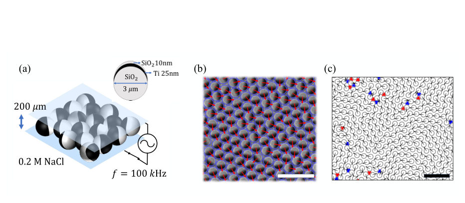
<figcaption class="paper-figure-caption"><b>Fig 1.</b> FIG. 1. Experimental realization and effective-spin representation of the Janus-particle array. (a) Schematic of the experimental setup, showing the metallic and dielectric hemispheres of a Janus particle and the two-dimensional colloidal monolayer subject to an AC electric field. (b) Representative region of the Janus-particle array, with the particle orientations represented by effective classical spins (red arrows). The scale bar is 10 µm. (c) Effective-spin representation of an orientational configuration, highlighting vortices (red) and antivortices (blue). The scale bar is 10 µm. The figure is reproduced from Ref. [16].</figcaption>
</figure>
<figure class="paper-figure-card">
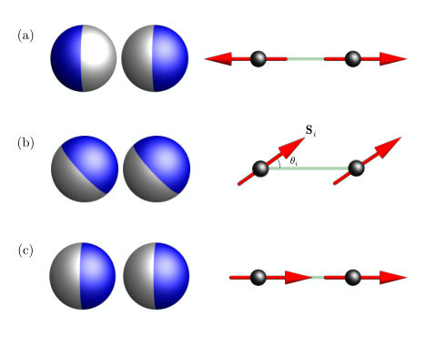
<figcaption class="paper-figure-caption"><b>Fig 2.</b> FIG. 2. Mapping of Janus-particle orientations onto effective XY spins and the origin of bond-dependent interactions. The AC electric field along the z direction constrains the normal to the interface between the metallic and dielectric hemispheres to the xy plane, leaving a single azimuthal angle θ represented by an effective spin S, point- ing from the dielectric hemisphere (white) to the metal patch (blue) direction. For a neighboring pair, the antiparallel con- figuration in (a) is energetically unfavorable, while the paral- lel configurations in (b) and (c) are inequivalent because their energies also depend on the spin orientations relative to the interparticle bond. The bond-aligned...</figcaption>
</figure>
<figure class="paper-figure-card">
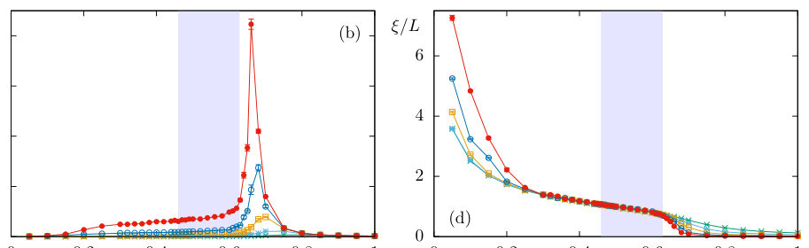
<figcaption class="paper-figure-caption"><b>Fig 3.</b> FIG. 3. Monte Carlo results for the triangular-lattice 120◦model for system sizes up to L = 256. Temperature dependence of (a) the specific heat C, (b) the magnetic susceptibility χ, (c) the squared magnetization M2, and (d) the correlation-length ratio ξ/L. The crossings for the two largest sizes give rough estimates of the lower and upper BKT tempera- tures, T lower BKT /J ≃0.46 and T upper BKT /J ≃0.63. The purple shading indicates the estimated intermediate quasi-long-range-ordered region, while the gray bands in the insets mark approximate crossing ranges. Finite-size corrections, especially near the lower transition, may further shift the transition temperatures.</figcaption>
</figure>
<figure class="paper-figure-card">
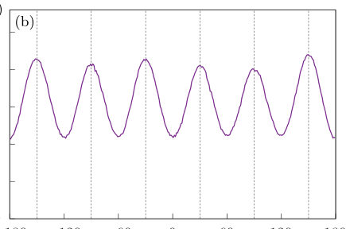
<figcaption class="paper-figure-caption"><b>Fig 4.</b> FIG. 4. Low-temperature configurations and angu- lar distribution of the triangular-lattice 120◦model at L = 24 and T = 0.05J. (a) Representative spin con- figuration showing surviving vortex–antivortex pairs during the relaxation, with the red dots marking vortices and the blue dots marking anti-vortices. The snapshot illustrates the topological character of the defects and is not an equilibrium vortex-statistics measurement. (b) Distribution of individual spin angles, P(θ), accumulated over all lattice sites in 104</figcaption>
</figure>
<figure class="paper-figure-card">
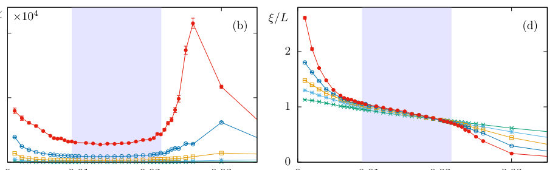
<figcaption class="paper-figure-caption"><b>Fig 5.</b> FIG. 5. Monte Carlo results for the effective Kern–Frenkel model for system sizes up to L = 256. Temperature dependence of (a) the specific heat C, (b) the magnetic susceptibility χ, (c) the squared magnetization M2, and (d) the correlation-length ratio ξ/L. The lower-left and upper-right insets in panel (c) show L1/9M 2 and L1/4M 2, respectively, following the same scaling analysis as for the 120◦model. The crossings for the two largest sizes give rough estimates of the lower and upper BKT temperatures, T lower BKT /J ≃0.009 and T upper BKT /J ≃0.02. The purple shading indicates the estimated intermediate quasi-long-range-ordered region, while the gray bands in the insets mark approximate...</figcaption>
</figure>
</div>

<p><strong>Summary.</strong> This work models the orientational ordering of Janus particle arrays using effective classical spin Hamiltonians, treating the interactions as anisotropic and bond-dependent. Through Monte Carlo simulations, the authors demonstrate that the system exhibits sixfold order via thermal order-by-disorder, and they show how higher-order interaction terms can precisely tune or select the preferred lattice alignment observed experimentally.</p>
<p><strong>Why it may be interesting.</strong> The connection between microscopic lattice anisotropy (Janus particle interactions) and emergent, robust macroscopic order (sixfold symmetry) via classical spin models is highly relevant to understanding frustrated magnetism and soft matter physics.</p>
<details>
<summary>Detailed structure</summary>
<p><strong>Main problem.</strong> The study investigates the orientational ordering of Janus particle arrays, modeling particle orientations as classical spins with anisotropic, bond-dependent interactions.</p>
<p><strong>Main result.</strong> The system exhibits a low-temperature sixfold ordered phase arising from thermal order-by-disorder, and higher-order interaction terms can selectively lift degeneracy or reverse fluctuation-induced anisotropy.</p>
<p><strong>Method.</strong> The research employs Monte Carlo simulations and theoretical analysis of effective spin Hamiltonians, comparing results to known critical phenomena like the Berezinskii–Kosterlitz–Thouless (BKT) transitions.</p>
<p><strong>Model / system.</strong> The system is a 2D monolayer of Janus particles on a triangular lattice, whose orientations are mapped to classical spins. The effective models include the minimal $120^\circ$ compass model and the Kern–Frenkel model, incorporating bond-directional interactions.</p>
<p><strong>Key observables.</strong> Sixfold orientational order, topological defects (vortices/antivortices), specific heat ($C$), magnetic susceptibility ($\chi$), and correlation length ($\xi$).</p>
<p><strong>Important parameters / regimes.</strong> Temperature ($T$), interaction strengths ($J_1, J_2, J_3$), and the ratio of interaction terms ($J_2/J_1$).</p>
<p><strong>Assumptions / limitations.</strong> The particle centers form an approximately fixed triangular lattice, allowing orientations to be treated as the relevant low-energy degrees of freedom.</p>
<p><strong>Figures summary.</strong> Figures illustrate the experimental setup, the mapping of particle orientations to effective spins, and the thermal evolution of key thermodynamic quantities ($C, \chi, M^2, \xi/L$) showing BKT crossover behavior.</p>
<p><strong>Paper structure.</strong> The paper progresses by defining the physical system and mapping it to effective spin models (e.g., $120^\circ$ compass model). It then uses MC simulations to establish the phase diagram (disordered $\leftrightarrow$ ordered) and analyzes how higher-order terms ($J_2, J_3$) modify the selection mechanism for the sixfold order.</p>
</details>
<details>
<summary>Abstract</summary>
<p>Janus-particle arrays provide a soft-matter platform in which particle orientations act as classical spins with anisotropic, bond-dependent interactions. Motivated by recent experiments on triangular arrays of metallodielectric Janus particles exhibiting sixfold orientational order and directly observable vortices and antivortices, we study effective models beyond the isotropic XY description. A classical $120^\circ$ compass model captures the minimal bond-directional interaction, while an effective Kern--Frenkel model incorporates the geometry of the Janus surface interaction more directly. Monte Carlo simulations show that both models exhibit a low-temperature sixfold ordered phase, a high-temperature disordered phase, and an intermediate quasi-long-range-ordered regime consistent with two Berezinskii--Kosterlitz--Thouless transitions. In both cases, the sixfold order arises through thermal order-by-disorder from a continuously degenerate ferromagnetic manifold. We further show that higher-order extensions of the $120^\circ$ interaction can alter the orientational selection: a quadratic term reverses the fluctuation-induced sixfold anisotropy, while a cubic term lifts the degeneracy energetically and selects the lattice-aligned directions that coincide with those observed experimentally. These results connect the microscopic anisotropy of Janus-particle interactions to emergent XY-like vortex physics and illustrate how distinct microscopic mechanisms can produce similar sixfold orientational order.</p>
</details>
<p><sub><a href="#top">↑ back to top</a></sub></p>

<p><a id="paper-2609.28786"></a></p>
<h3 id="plane-wave-photon-fock-cavity-qed-dft-chiral-cavity-induced-topology-in-graphene"><a href="http://arxiv.org/abs/2609.28786v1">Plane-Wave Photon-Fock Cavity QED-DFT: Chiral-Cavity-Induced Topology in Graphene</a></h3>
<p><strong>Authors:</strong> Yetmgeta Aklilu, Kalman Varga<br>
<strong>Type:</strong> theory · <strong>Category:</strong> other · <strong>PDF:</strong> <a href="https://arxiv.org/pdf/2609.28786v1">https://arxiv.org/pdf/2609.28786v1</a><br>
<strong>Analysis basis:</strong> full PDF text, analyzed in chunks
<strong>Topic relevance:</strong> <code>analog quantum simulation</code> <strong>3/5</strong> · <code>Tavis-Cummings &amp; cavity-many-emitter</code> <strong>1/5</strong> · <code>interference shaping light</code> <strong>1/5</strong></p>
<div class="figure-strip-hint">↔ Scroll figures horizontally</div>
<div class="paper-figures-scroll">
<figure class="paper-figure-card">
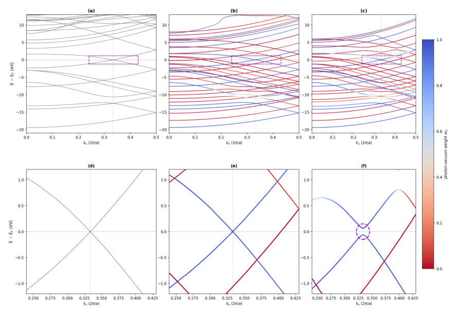
<figcaption class="paper-figure-caption"><b>Fig 1.</b> FIG. 1. Polariton band structure at intermediate coupling (A0/c = 0.04, ω = 2 eV, M = 3), each panel referenced to its own Fermi level. (a)–(c): full-window bands, cavity-free/linear/chiral. (d)–(f): Dirac-point zoom. Color is w0 [Eq. (6)]; blue 1, matter-like; red 0, photon-dressed. The linear cavity leaves the Dirac crossing gapless (e), as symmetry requires (see text); the chiral (Haldane) gap (129 meV, dashed ellipse, f) opens with the branches still matter-like at K, the real hybridization occurring off-K where a different photon replica crosses the cone.</figcaption>
</figure>
<figure class="paper-figure-card">
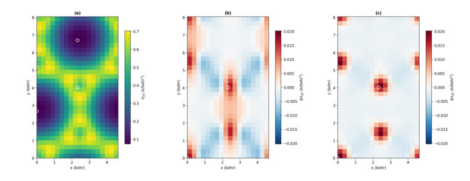
<figcaption class="paper-figure-caption"><b>Fig 2.</b> FIG. 2. Cavity-induced density change at A0/c = 0.04, linear color scale. (a) Cavity-free density n2D(x, y), z-integrated. (b) Linear-cavity minus cavity-free difference ∆n2D (blue/red = depletion/accumulation), max |∆n2D| = 1.619×10−2 e/bohr2. (c) Chiral-cavity minus cavity-free difference, same scale, max |∆n2D| = 2.024 × 10−2 e/bohr2. White circles mark the four carbon atoms.</figcaption>
</figure>
<figure class="paper-figure-card">
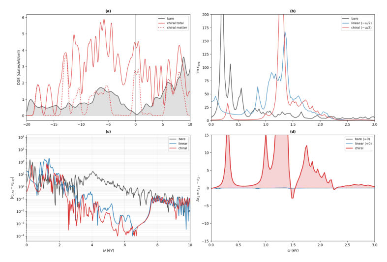
<figcaption class="paper-figure-caption"><b>Fig 3.</b> FIG. 3. Density of states and dielectric response at A0/c = 0.04. (a) DOS; “total” sums all four Fock sectors, “matter” is the w0-weighted curve. (b) Absorption Im ¯ε(ω). (c) Linear dichroism |ε2,xx −ε2,yy|. (d) Circular dichroism 2 Im ε2,xy.</figcaption>
</figure>
<figure class="paper-figure-card">
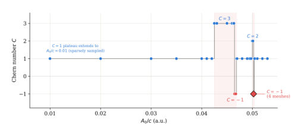
<figcaption class="paper-figure-caption"><b>Fig 4.</b> FIG. 4. Chern number of the occupied eight-band manifold, chiral cavity, across 29 independently converged couplings. Blue markers: C = 1, 2, 3; red markers: the two sign-reversed C = −1 notches, each ≲1×10−4 wide in A0/c and each imme- diately preceded by a jump to a higher-C plateau (shaded). The red diamond at A0/c = 0.05025 is independently con- firmed on four meshes spanning 60–9880 k-points (Supple- mental Material [88]). Berry-curvature maps for representa- tive couplings are shown in Fig. 5.</figcaption>
</figure>
<figure class="paper-figure-card">
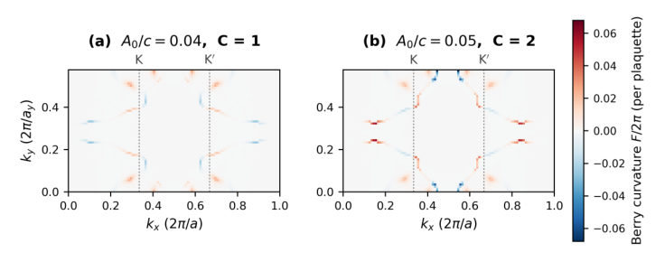
<figcaption class="paper-figure-caption"><b>Fig 5.</b> FIG. 5. Berry curvature of the occupied eight-band manifold over the full Brillouin zone, chiral cavity, at (a) A0/c = 0.04 (C = 1) and (b) A0/c = 0.05 (C = 2), the two original anchor couplings. Dotted lines mark the folded Dirac points K, K′</figcaption>
</figure>
</div>

<p><strong>Summary.</strong> The authors present a novel plane-wave approach to calculate cavity QED effects in periodic solids, using graphene coupled to optical cavities. They demonstrate that a chiral cavity induces a topologically non-trivial Haldane gap, characterized by a quantized, sign-changing Chern number. This method establishes a powerful theoretical tool for engineering topological phases in materials using photonic structures.</p>
<p><strong>Why it may be interesting.</strong> This work bridges solid-state DFT with cavity QED by providing a rigorous, first-principles framework to calculate topological phases induced by light-matter coupling in extended materials.</p>
<details>
<summary>Detailed structure</summary>
<p><strong>Main problem.</strong> Developing a first-principles method to study cavity Quantum Electrodynamics (QED) in periodic solids, specifically addressing the coupling between electrons and quantized cavity photons.</p>
<p><strong>Main result.</strong> The method successfully calculates the topological character of the chiral-cavity gap, showing the occupied manifold carries a quantized Chern number that steps through a non-monotonic sequence.</p>
<p><strong>Method.</strong> An explicit plane-wave (PW) $   imes$ photon-Fock approach is developed, reusing existing plane-wave DFT machinery by modifying the crystal momentum ($\mathbf{K} 	o \mathbf{K} + \hat{\mathbf{A}}/c$).</p>
<p><strong>Model / system.</strong> The study uses monolayer graphene placed in linear or chiral optical cavities, modeled via the non-relativistic Pauli–Fierz Hamiltonian. The approach extends molecular QED methods to periodic, first-principles calculations.</p>
<p><strong>Key observables.</strong> Quantized Chern number, polarization-selective Haldane gap, density-of-states, and circular-dichroism.</p>
<p><strong>Important parameters / regimes.</strong> Coupling strength ($A_0/c$), cavity polarization (linear vs. chiral), and the Brillouin zone momentum ($\mathbf{K}$).</p>
<p><strong>Assumptions / limitations.</strong> The method is formulated at the Kohn–Sham (mean-field) level and is valid in the long-wavelength (dipole) approximation.</p>
<p><strong>Figures summary.</strong> Figures illustrate the band structure (polariton replicas) for different cavity couplings, showing the gap opening in the chiral case and the Berry curvature over the Brillouin zone confirming the Chern number sequence.</p>
<p><strong>Paper structure.</strong> The paper introduces the PW$   imes$Fock formalism, applies it to graphene in cavities, calculates topological invariants (Chern number) via Berry curvature, and analyzes measurable optical signatures like circular dichroism.</p>
</details>
<details>
<summary>Abstract</summary>
<p>We develop an explicit plane-wave (PW) $\times$ photon-Fock approach to the quantized, velocity-gauge Pauli--Fierz Hamiltonian for periodic, first-principles calculations: because the quantized vector potential is spatially uniform, the light--matter coupling reduces to an operator-valued shift of the crystal momentum, $K\to K+\hat{\mathbf A}/c$, and the existing plane-wave machinery of ordinary solid-state DFT is reused essentially unchanged. This PW$\times$Fock construction puts first-principles cavity QED of periodic solids on the same footing as the Fock-space coupled-cluster and configuration-interaction methods already developed for molecules, opening hitherto inaccessible systems---materials in a linear or chiral cavity, in particular---to first-principles plane-wave calculations. We illustrate the method with monolayer graphene in linear and chiral cavities, obtaining a polarization-selective Haldane gap together with the corresponding density-of-states, real-space, and circular-dichroism optical signatures. A full Brillouin-zone Berry-curvature calculation confirms the topological character of the chiral-cavity gap directly: the occupied manifold carries a quantized Chern number that steps through a non-monotonic sequence, $C=1\to3\to{-1}\to1\to2\to{-1}\to1$, with two narrow, sign-reversed windows---a property of extended, vacuum-dressed matter with no counterpart in a finite molecular system.</p>
</details>
<p><sub><a href="#top">↑ back to top</a></sub></p>

<p><a id="paper-2609.29348"></a></p>
<h3 id="classical-sufficiency-in-quantum-statistical-experiments"><a href="http://arxiv.org/abs/2609.29348v1">Classical Sufficiency in Quantum Statistical Experiments</a></h3>
<p><strong>Authors:</strong> Samriddha Lahiry<br>
<strong>Type:</strong> theory · <strong>Category:</strong> statistical mechanics · <strong>PDF:</strong> <a href="https://arxiv.org/pdf/2609.29348v1">https://arxiv.org/pdf/2609.29348v1</a><br>
<strong>Analysis basis:</strong> full PDF text, analyzed in chunks
<strong>Topic relevance:</strong> <code>quantum measurements</code> <strong>3/5</strong> · <code>Full counting statistics</code> <strong>1/5</strong></p>
<div class="figure-strip-hint">↔ Scroll figures horizontally</div>
<div class="paper-figures-scroll">
<figure class="paper-figure-card">
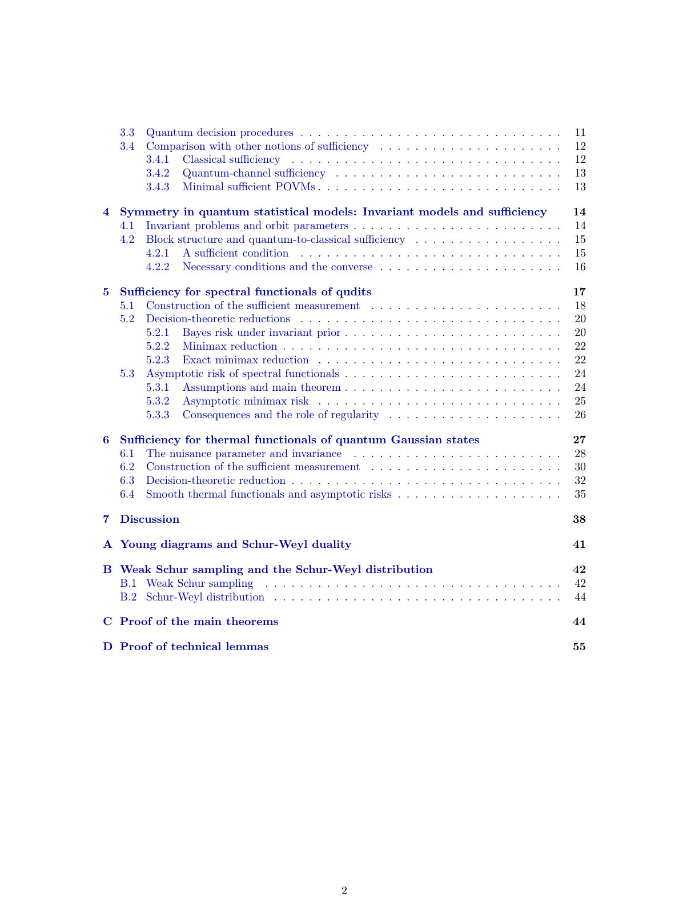
<figcaption class="paper-figure-caption"><b>Fig 1.</b> Low-resolution page preview, page 2</figcaption>
</figure>
<figure class="paper-figure-card">
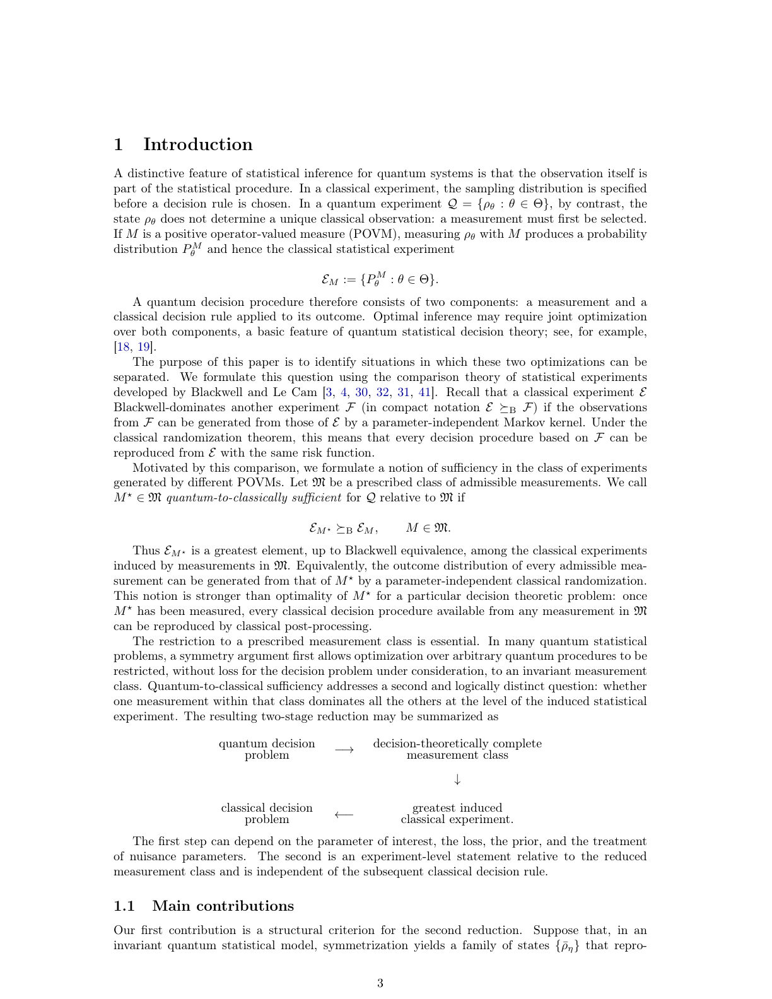
<figcaption class="paper-figure-caption"><b>Fig 2.</b> Low-resolution page preview, page 3</figcaption>
</figure>
<figure class="paper-figure-card">
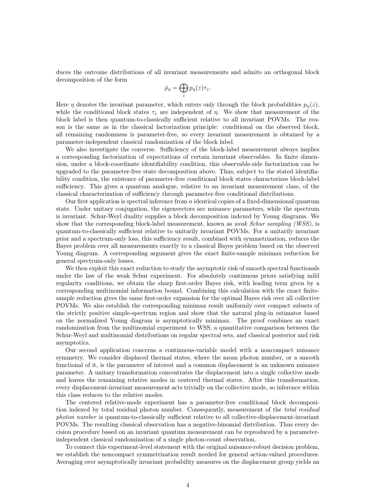
<figcaption class="paper-figure-caption"><b>Fig 3.</b> Low-resolution page preview, page 4</figcaption>
</figure>
<figure class="paper-figure-card">
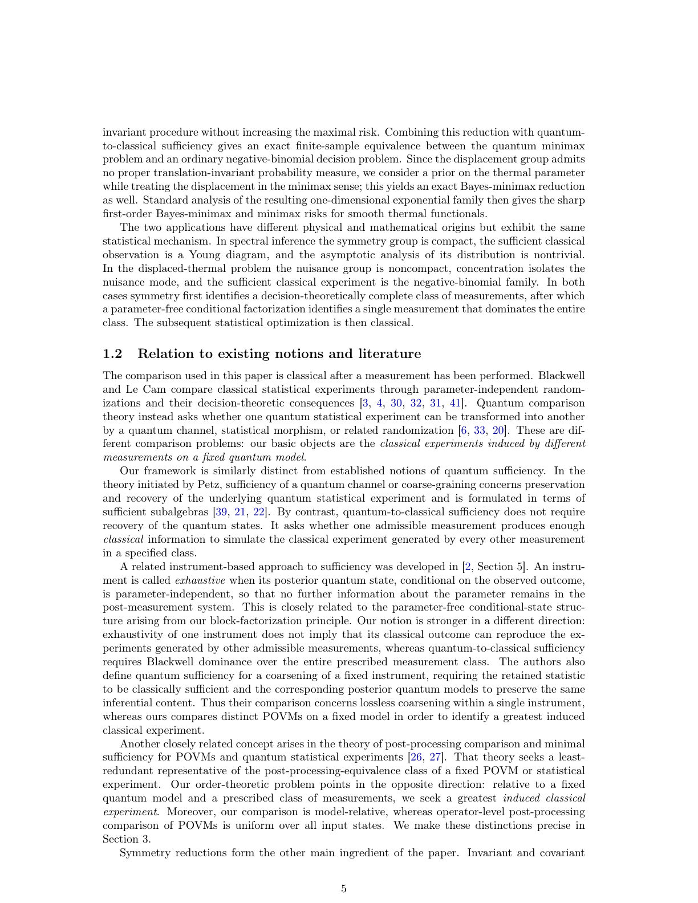
<figcaption class="paper-figure-caption"><b>Fig 4.</b> Low-resolution page preview, page 5</figcaption>
</figure>
<figure class="paper-figure-card">
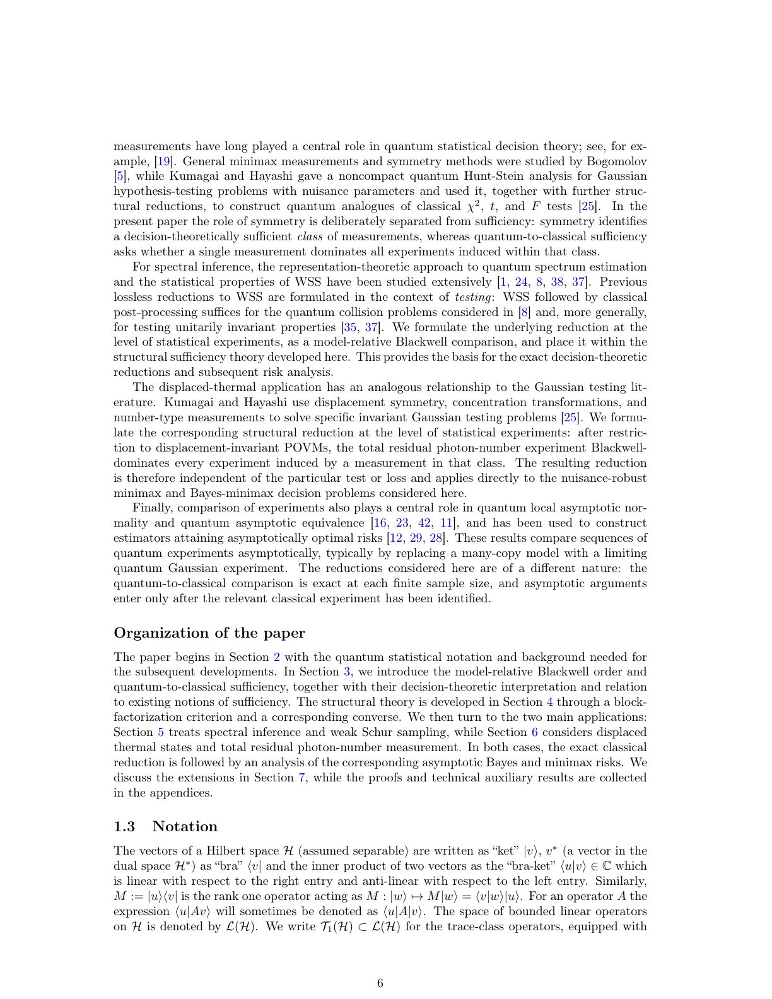
<figcaption class="paper-figure-caption"><b>Fig 5.</b> Low-resolution page preview, page 6</figcaption>
</figure>
</div>

<p><strong>Summary.</strong> This paper introduces the concept of quantum-to-classical sufficiency to simplify quantum statistical inference. It shows that for certain physical systems, the optimal measurement can be identified such that the entire problem reduces exactly to a classical decision problem. This provides powerful, solvable frameworks for estimating parameters in quantum systems.</p>
<p><strong>Why it may be interesting.</strong> The rigorous reduction of quantum inference problems to classical decision theory is a powerful tool for simplifying complex quantum estimation tasks, providing concrete, solvable benchmarks for quantum information theory.</p>
<details>
<summary>Detailed structure</summary>
<p><strong>Main problem.</strong> To develop a rigorous framework for quantum statistical inference, specifically identifying conditions under which complex quantum optimization problems can be reduced to simpler, classical decision problems.</p>
<p><strong>Main result.</strong> The paper establishes 'quantum-to-classical sufficiency,' showing that for specific physical models (like spectral inference or thermal states), the optimal measurement can be identified, leading to exact finite-sample reductions of Bayes and minimax problems.</p>
<p><strong>Method.</strong> It employs the comparison theory of statistical experiments (Blackwell dominance) combined with structural factorization criteria derived from symmetry arguments (e.g., orthogonal block decomposition).</p>
<p><strong>Model / system.</strong> The analysis covers general quantum statistical experiments $\{ 
ho_	heta \}$, applying the theory to specific models: tensor-product models under unitary conjugation (spectral inference) and displaced thermal states (continuous-variable setting).</p>
<p><strong>Key observables.</strong> The sufficient classical observations include the Young diagram (for spectral inference) and the total residual photon number (for thermal states).</p>
<p><strong>Important parameters / regimes.</strong> The parameters of interest ($   heta$) are spectral parameters ($\eta$) or the thermal parameter with an unknown displacement.</p>
<p><strong>Assumptions / limitations.</strong> The reduction relies on the existence of an invariant measurement class and the state admitting a specific orthogonal block decomposition or factorization structure.</p>
<p><strong>Figures summary.</strong> Not specified by the notes.</p>
<p><strong>Paper structure.</strong> The paper develops the general theory of quantum-to-classical sufficiency, then applies it first to spectral inference in discrete settings, and subsequently to continuous-variable models involving displaced thermal states.</p>
</details>
<details>
<summary>Abstract</summary>
<p>A quantum measurement transforms a quantum statistical experiment into a classical one, but different measurements generally yield experiments with different statistical information. We introduce quantum-to-classical sufficiency: relative to a prescribed measurement class, a measurement is sufficient if its induced classical experiment Blackwell-dominates those from every other measurement in the class. This separates two components of quantum inference: reducing the measurement class through symmetry or decision-theoretic arguments, and identifying a canonical measurement in the reduced class by an experiment-level sufficiency condition.   We establish a factorization criterion where the parameter enters the group-averaged experiment only through weights of an orthogonal block decomposition. The block-label measurement is then sufficient relative to all invariant measurements. For tensor-product models under unitary conjugation, this identifies weak Schur sampling as the sufficient measurement for spectral inference. Combined with risk-preserving symmetrization, it reduces invariant Bayes and minimax problems over all measurements exactly to classical decision problems based on Young diagrams. We derive sharp first-order asymptotic Bayes and minimax risks for smooth spectral functionals.   We establish an analogous reduction for a noncompact group action in a continuous-variable setting. We consider displaced thermal states and functionals of the thermal parameter with an unknown displacement. Within displacement-invariant measurements, total residual photon number measurement emerges as the sufficient measurement. Combined with Hunt-Stein reduction, this yields exact finite-sample reductions of Bayes-minimax and minimax problems over all measurements to classical decision problems based on the total residual photon count, which follows a negative binomial distribution.</p>
</details>
<p><sub><a href="#top">↑ back to top</a></sub></p>

<p><a id="paper-2609.29004"></a></p>
<h3 id="exact-selection-of-a-toric-code-vison-crystal-in-a-flux-conditioned-kitaev-model"><a href="http://arxiv.org/abs/2609.29004v1">Exact selection of a toric-code vison crystal in a flux-conditioned Kitaev model</a></h3>
<p><strong>Authors:</strong> Jiucai Wang, Chuan Chen<br>
<strong>Type:</strong> theory · <strong>Category:</strong> strongly correlated electrons · <strong>PDF:</strong> <a href="https://arxiv.org/pdf/2609.29004v1">https://arxiv.org/pdf/2609.29004v1</a><br>
<strong>Analysis basis:</strong> full PDF text, analyzed in chunks
<strong>Topic relevance:</strong> <code>analog quantum simulation</code> <strong>3/5</strong> · <code>quantum measurements</code> <strong>1/5</strong></p>
<div class="figure-strip-hint">↔ Scroll figures horizontally</div>
<div class="paper-figures-scroll">
<figure class="paper-figure-card">
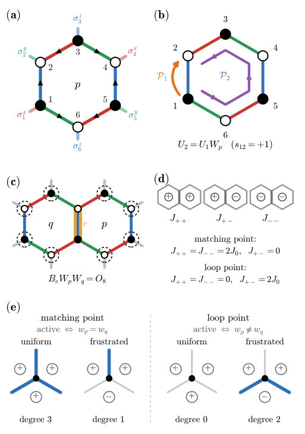
<figcaption class="paper-figure-caption"><b>Fig 1.</b> FIG. 1. (a) Plaquette and orientation conventions. Filled (open) circles are the A (B) sublattice, arrows fix the A →B link orientation, red, green, and blue mark x, y, and z bonds, and outer labels give the Pauli factors of Wp. (b) Direct path P1 and complementary path P2 between sites 1 and 2; their relative Wilson line is the enclosed flux Wp up to the geomet- rical sign s12 of Eq. (9), here +1. (c) Adjacent plaquettes p and q sharing bond e; dashed circles mark the eight-spin support of BeWpWq. (d) The three local flux environments and the amplitudes assigned by the two complementary flux- conditioned bond-cancellation limits, quoted as the signed coupling 2J0. (e) The same rule on the...</figcaption>
</figure>
<figure class="paper-figure-card">
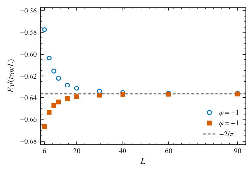
<figcaption class="paper-figure-caption"><b>Fig 2.</b> FIG. 2. The ground-state energy per site of an isolated Majo- rana loop. The two twist sectors approach the infinite-chain limit from opposite sides. Among loops with L ≥6, the L = 6, φ = −1 ring has the lowest energy per site.</figcaption>
</figure>
<figure class="paper-figure-card">
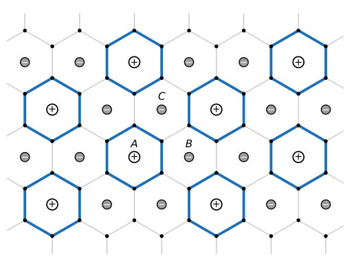
<figcaption class="paper-figure-caption"><b>Fig 3.</b> FIG. 3. Flux configuration of the 2/3-vison crystal. Flux- free A plaquettes (circled +) are surrounded by visons on the B and C sublattices (filled circles, wp = −1), and their boundaries form disjoint elementary Majorana rings covering every site. On admissible commensurate tori, this pattern is unique up to the three translations of the flux-free sublattice.</figcaption>
</figure>
<figure class="paper-figure-card">
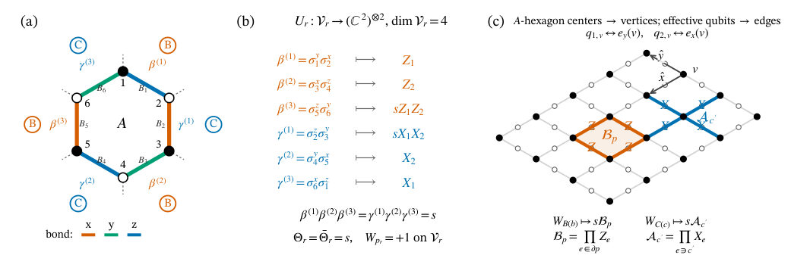
<figcaption class="paper-figure-caption"><b>Fig 4.</b> FIG. 4. Depth-one local-unitary construction. (a) A flux-free A hexagon of the 2/3-vison crystal. The dashed stubs mark inactive −−bonds. The six neighboring plaquettes alternate between B and C. Their respective two-spin factors within the hexagon are β(a) r and γ(a) r [Eq. (E5)]. (b) These six factors lie in the commutant of the hexagon bond algebra and restrict to a two-qubit Pauli frame on the four-dimensional cluster ground space Vr [Eq. (E7)]. The implementing unitary Ur acts on the six spins of one hexagon; consequently, U = N</figcaption>
</figure>
<figure class="paper-figure-card">
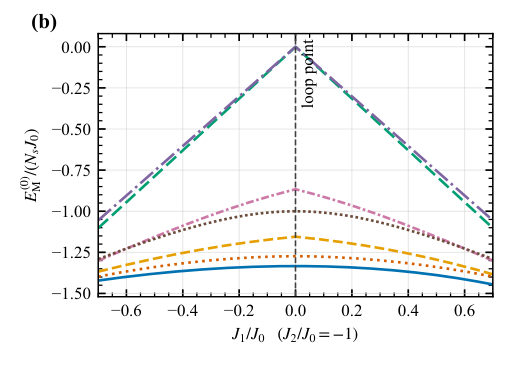
<figcaption class="paper-figure-caption"><b>Fig 5.</b> FIG. 5. Unprojected matter ground-state energies per spin, in units of J0, for seven representative periodic flux sectors on a 120 × 120-unit-cell torus, minimized over the four global Wilson-loop sectors. (a) Along J1 = 0, the 2/3-vison sector is favored near the loop point, while the flux-free sector becomes lowest toward the pure Kitaev limit. (b) Along J2/J0 = −1, the 2/3-vison sector remains lowest throughout; the loop point lies at J1/J0 = 0.</figcaption>
</figure>
</div>

<p><strong>Summary.</strong> This work analyzes an extended Kitaev honeycomb model to show how conserved Z2 fluxes dictate the connectivity of Majorana hopping. By tuning the model to a specific 'loop point,' the system exhibits exact gauge-matter feedback, leading to the selection of a stable, topologically ordered 2/3-vison crystal. This crystal structure is shown to possess the logical properties of a sheared square-lattice toric code.</p>
<p><strong>Why it may be interesting.</strong> The explicit realization of gauge-matter feedback—where the flux pattern dictates the fermion movement, and the resulting zero-point energy selects the flux pattern—provides a concrete, solvable model for understanding topological order in strongly correlated magnetic systems.</p>
<details>
<summary>Detailed structure</summary>
<p><strong>Main problem.</strong> To investigate how conserved Z2 fluxes can control not only the signs but also the connectivity of nearest-neighbor Majorana hopping in the Kitaev honeycomb model, and whether this leads to a non-uniform flux ground state via gauge-matter feedback.</p>
<p><strong>Main result.</strong> The model realizes exact nonperturbative gauge-matter feedback, selecting a topologically ordered 2/3-vison crystal that possesses fourfold topological degeneracy within a single crystal.</p>
<p><strong>Method.</strong> The analysis involves constructing an exactly solvable extension of the Kitaev model, analyzing the effective Majorana bilinear coupling in flux sectors, and using local unitary transformations to map the ground space onto a sheared square-lattice toric code.</p>
<p><strong>Model / system.</strong> The system is the spin-1/2 Kitaev honeycomb model, extended to include flux-dependent hopping. The Hamiltonian is analyzed by examining its fragmentation into independent Majorana rings and zero modes within specific flux sectors.</p>
<p><strong>Key observables.</strong> Topological degeneracy (fourfold), ground state energy density, and the selection of the 2/3-vison crystal structure.</p>
<p><strong>Important parameters / regimes.</strong> The analysis is critically dependent on tuning the system to a specific 'loop point' where hopping survives only across opposite-flux plaquettes.</p>
<p><strong>Assumptions / limitations.</strong> The analysis of the global flux competition and the selection of the crystal is specific to the fine-tuned loop point; away from this point, only sector-specific bounds are established.</p>
<p><strong>Figures summary.</strong> Figure 1 illustrates plaquette and orientation conventions, showing how the loop point forces active bonds only where adjacent plaquettes have opposite fluxes. Figure 6 illustrates the 2/3-vison crystal on a torus, showing flux-free plaquettes and the paths of the dual strings T1 and T2.</p>
<p><strong>Paper structure.</strong> The paper progresses by first establishing the flux-dependent hopping mechanism, analyzing the system at the critical 'loop point' where the matter Hamiltonian fragments, deriving the energy bound from loop coverings, and finally confirming the topological structure by mapping the ground space to a known toric code model.</p>
</details>
<details>
<summary>Abstract</summary>
<p>We construct an exactly solvable extension of the spin-$1/2$ Kitaev honeycomb model in which conserved $\mathbb{Z}_2$ fluxes determine not only the signs but also the connectivity of nearest-neighbor Majorana hopping. At a tuned loop point, hopping survives only across opposite-flux plaquettes, so every vertex has active degree zero or two and the matter Hamiltonian fragments in each flux sector into independent Majorana rings and isolated zero modes. Exact ring spectra and bond counting then bound the matter energy over all local flux configurations and all four Wilson-loop sectors, and split it exactly into a frustrated triangular-lattice Ising term, whose extensively degenerate ground states are the fully packed loop coverings, and a non-negative Majorana residual. On admissible commensurate tori, the residual selects precisely the three translation-related $2/3$-vison crystals, which saturate the bound, and an exact fermion-parity identity shows that for antiferromagnetic coupling their vacua also survive projection, making them rigorous ground states of the spin model. Within a single crystal, a depth-one local unitary then maps the ground space onto that of a sheared square-lattice toric code, giving fourfold topological degeneracy. The model thus realizes exact nonperturbative gauge-matter feedback: the flux fixes where the Majorana fermions may move, and their zero-point energy selects in return a topologically ordered vison crystal with spontaneously broken translation symmetry.</p>
</details>
<p><sub><a href="#top">↑ back to top</a></sub></p>

<p><a id="paper-2609.30162"></a></p>
<h3 id="from-dimensional-reduction-to-tetramerization-in-mixed-ferro-antiferro-breathing-pyrochlores"><a href="http://arxiv.org/abs/2609.30162v1">From dimensional reduction to tetramerization in mixed ferro-antiferro breathing pyrochlores</a></h3>
<p><strong>Authors:</strong> Sourin Chatterjee, Kelvin Salou-Smith, Benedikt Schneider, Imre Hagymási, Arnaud Ralko, Johannes Reuther, Jeffrey G. Rau, Karlo Penc, Harald O. Jeschke, Ludovic D. C. Jaubert, Yasir Iqbal<br>
<strong>Type:</strong> theory · <strong>Category:</strong> strongly correlated electrons · <strong>PDF:</strong> <a href="https://arxiv.org/pdf/2609.30162v1">https://arxiv.org/pdf/2609.30162v1</a><br>
<strong>Analysis basis:</strong> full PDF text, analyzed in chunks
<strong>Topic relevance:</strong> <code>analog quantum simulation</code> <strong>3/5</strong> · <code>methods for driven-dissipative</code> <strong>1/5</strong></p>
<div class="figure-strip-hint">↔ Scroll figures horizontally</div>
<div class="paper-figures-scroll">
<figure class="paper-figure-card">
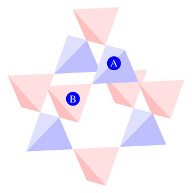
<figcaption class="paper-figure-caption"><b>Fig 1.</b> FIG. 1. Breathing pyrochlore lattice, built from alternating “up” (𝐴) and “down” (𝐵) tetrahedra carrying the exchange constants 𝐽𝐴and 𝐽𝐵of Eq. (1). The centers of the 𝐴tetrahedra, and likewise those of the 𝐵tetrahedra, form an fcc lattice.</figcaption>
</figure>
<figure class="paper-figure-card">
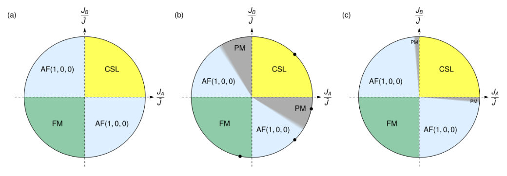
<figcaption class="paper-figure-caption"><b>Fig 2.</b> FIG. 2. Phase diagrams of the nearest-neighbor breathing-pyrochlore Heisenberg model, parametrized by 𝐽𝐴= ¯𝐽cos 𝜃and 𝐽𝐵= ¯𝐽sin 𝜃 with ¯𝐽&gt; 0 [Eq. (3)]. (a) Classical phase diagram of the low-temperature phases from Monte Carlo simulations, which agrees with Ref. [31] at 𝑇→0+. The mixed-sign quadrants are selected by thermal order-by-disorder into the Type-I 𝑋= (1, 0, 0) antiferromagnet. (b),(c) pf-FRG phase diagrams for 𝑆= 1/2 and 𝑆= 1, respectively. Quantum fluctuations open a nonmagnetic regime near the decoupled antiferromagnetic- tetrahedron limits, while the 𝑋= (1, 0, 0) ordered phase survives at stronger mixed-sign coupling. The black dots mark the representative points whose...</figcaption>
</figure>
<figure class="paper-figure-card">
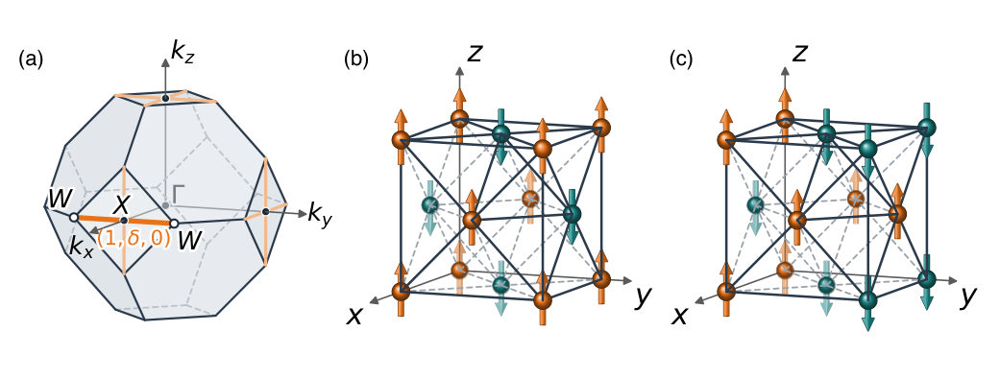
<figcaption class="paper-figure-caption"><b>Fig 3.</b> FIG. 3. Soft-mode line and collinear ordered states of the effective fcc antiferromagnet. (a) First Brillouin zone of the fcc lattice, in units of 2𝜋/𝑎. The 𝑋points (filled circles) sit at the centers of the square faces and the 𝑊points (open circles) at their corners. The soft-mode line q = (1, 𝛿, 0) of Eq. (6) is the diagonal of the 𝑘𝑥= 1 face running from 𝑊through 𝑋to 𝑊(thick orange); its symmetry-related partners (light orange) make every 𝑋point the crossing of two such lines. (b),(c) Type-I (AF1) and Type-III (AF3) structures on one conventional cubic cell of the fcc lattice formed by the centers of the ferromagnetic 𝐵tetrahedra, with ordering wave vectors 𝑋= (1, 0, 0) and 𝑊= (1, 1</figcaption>
</figure>
<figure class="paper-figure-card">
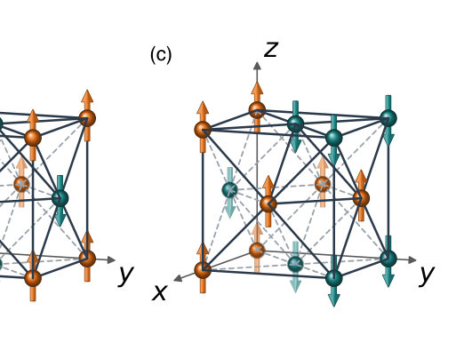
<figcaption class="paper-figure-caption"><b>Fig 4.</b> Figure 4 shows the heat capacity𝐶ℎand the reduced uniform susceptibility 𝜒𝑇for three representative values of the ferro- magnetic coupling, 𝐽𝐵= −0.5, −1, and −2, with 𝐽𝐴= 1. The heat capacity develops a sharp anomaly at a finite transition temperature,</figcaption>
</figure>
<figure class="paper-figure-card">
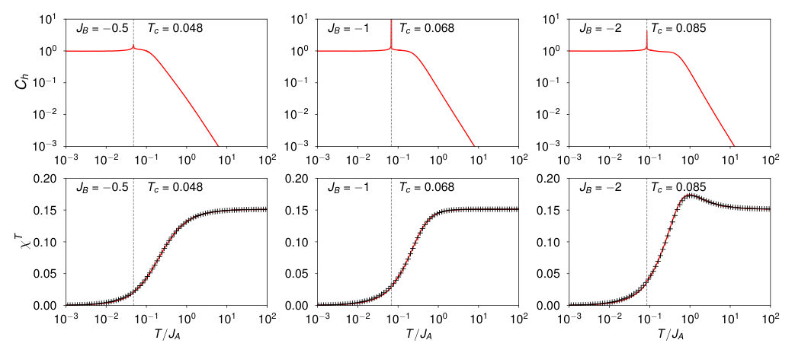
<figcaption class="paper-figure-caption"><b>Fig 5.</b> FIG. 4. Heat capacity 𝐶ℎand reduced susceptibility 𝜒𝑇for 𝐽𝐴= 1 and 𝐽𝐵= −0.5 (left), −1 (middle) and −2 (right). We clearly see a phase transition in the heat capacity that is invisible in the magnetic susceptibility, indicating that the low-temperature order carries no magnetization. 𝜒𝑇displays a characteristic Curie-law crossover, with the onset of ferromagnetic fluctuations for 𝐽𝐵= −2 (see the bump). In the limit 𝐽𝐵/𝐽𝐴→−∞, we have at intermediate temperatures, 𝐽𝐴≪𝑇≪|𝐽𝐵|, a paramagnet on the fcc lattice whose super-spins are the four collinear spins of each 𝐵tetrahedron. The Curie constant is then 4 times bigger than for the paramagnet on the pyrochlore lattice, hence the bump. The red...</figcaption>
</figure>
</div>

<p><strong>Summary.</strong> This paper theoretically analyzes magnetic ordering in mixed ferro-antiferro breathing pyrochlores using advanced quantum simulation techniques. It demonstrates that while classical physics selects a simple collinear order, quantum effects reveal complex, highly correlated tetramer structures. The findings successfully map onto the magnetic behavior observed in real chromium-based spinels.</p>
<p><strong>Why it may be interesting.</strong> The interplay between geometric frustration, thermal fluctuations (order-by-disorder), and quantum fluctuations leading to complex, correlated ground states is highly relevant to understanding strongly correlated electron systems in oxides and chalcogenides.</p>
<details>
<summary>Detailed structure</summary>
<p><strong>Main problem.</strong> The study investigates the magnetic ordering and correlation mechanisms in mixed ferro-antiferro breathing pyrochlores, focusing on the transition from dimensional reduction to tetramerization.</p>
<p><strong>Main result.</strong> The model predicts that thermal fluctuations select a Type-I antiferromagnetic state, while quantum fluctuations reveal underlying tetramer correlations and a nonmagnetic window in the phase diagram.</p>
<p><strong>Method.</strong> The research employs a combination of advanced theoretical techniques, including Monte Carlo simulations, functional renormalization group (FRG), and Density Matrix Renormalization Group (DMRG) calculations.</p>
<p><strong>Model / system.</strong> The system is the spin-1/2 nearest-neighbor Heisenberg model on the breathing pyrochlore lattice, specifically in the mixed ferro-antiferro regime, whose classical ground state maps to the nearest-neighbor fcc antiferromagnet.</p>
<p><strong>Key observables.</strong> Ordering wave vector X=(1,0,0), spin structure factor, local spin correlations (e.g., $\langle\mathbf{S}_i\cdot\mathbf{S}_j
angle$), and low-energy spectral weight.</p>
<p><strong>Important parameters / regimes.</strong> The mixed ferro-antiferro coupling regime ($J_A$ and $J_B$ having opposite signs) and the spin quantum number ($S=1/2$ and $S=1$).</p>
<p><strong>Assumptions / limitations.</strong> The analysis relies on the equivalence between the mixed-sign pyrochlore and the nearest-neighbor fcc antiferromagnet manifold, and the use of effective Hamiltonian descriptions.</p>
<p><strong>Figures summary.</strong> The notes refer to phase diagrams showing classical and quantum transitions, and structural diagrams illustrating the fcc lattice and soft-mode lines.</p>
<p><strong>Paper structure.</strong> The paper progresses from classical Monte Carlo simulations selecting the Type-I state, through quantum calculations (pf-FRG, DMRG) revealing tetramer correlations, to deriving an effective Hamiltonian and finally applying the model to predict ordering in specific chromium thiospinel compounds.</p>
</details>
<details>
<summary>Abstract</summary>
<p>We study the spin-1/2 nearest-neighbor Heisenberg model on the breathing pyrochlore lattice in the mixed ferro-antiferromagnetic regime, where one tetrahedral sublattice is antiferromagnetic and the other ferromagnetic. The classical ground-state manifold is then that of the nearest-neighbor face-centered-cubic (fcc) antiferromagnet built from composite tetrahedral moments. Classical Monte Carlo simulations and the self-consistent Gaussian approximation show that thermal order-by-disorder lifts its subextensive degeneracy and selects the collinear Type-I state with wave vector $X=(1,0,0)$ through a strongly first-order transition. Pseudofermion functional renormalization group calculations for $S=1/2$ and $S=1$ reveal a nonmagnetic window adjacent to the decoupled antiferromagnetic-tetrahedron limit, beyond which $X$ order reappears. Density matrix renormalization group calculations show that this window is not featureless: the antiferromagnetic tetrahedra develop nearly ideal tetramer correlations, with four bonds carrying $\langle\mathbf{S}_i\cdot\mathbf{S}_j\rangle\simeq-1/2$ and the two opposite bonds $\simeq+1/4$, while the structure factor retains broad maxima at $X$. A third-order effective Hamiltonian in the tetrahedral-singlet manifold explains this: reversing the sign of the inter-tetrahedron coupling converts Tsunetsugu's dimer selection into a uniform tetramer selection, as confirmed by exact diagonalization. A dynamic high-temperature expansion traces how local tetrahedral excitations give way to low-energy $X$-centered spectral weight. Finally, we place density-functional parameters for eight structures of spin-3/2 breathing chromium thiospinels in the classical phase diagram. The mapping reproduces the $\mathbf{k}=(1,0,0)$ order of CuInCr$_4$S$_8$, accounts for the absence of order in LiGaCr$_4$S$_8$, and predicts Type-I order for LiInCr$_4$S$_8$.</p>
</details>
<p><sub><a href="#top">↑ back to top</a></sub></p>

<p><a id="paper-2609.29248"></a></p>
<h3 id="the-uncertainty-principle-uncertainty-relations-and-underlying-trajectories-feynman-nelson-bohm-and-persistent-kac-dirac-dynamics"><a href="http://arxiv.org/abs/2609.29248v1">The Uncertainty Principle, Uncertainty Relations, and Underlying Trajectories: Feynman, Nelson, Bohm, and Persistent Kac-Dirac Dynamics</a></h3>
<p><strong>Authors:</strong> Partha Ghose<br>
<strong>Type:</strong> theory · <strong>Category:</strong> other · <strong>PDF:</strong> <a href="https://arxiv.org/pdf/2609.29248v1">https://arxiv.org/pdf/2609.29248v1</a><br>
<strong>Analysis basis:</strong> full PDF text, analyzed in chunks
<strong>Topic relevance:</strong> <code>quantum measurements</code> <strong>3/5</strong> · <code>Keldysh / 2PI / non-Gaussian methods</code> <strong>1/5</strong></p>
<div class="figure-strip-hint">↔ Scroll figures horizontally</div>
<div class="paper-figures-scroll">
<figure class="paper-figure-card">
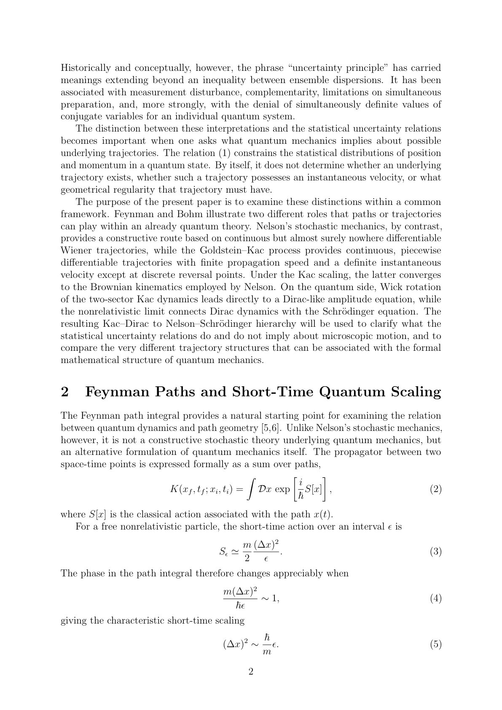
<figcaption class="paper-figure-caption"><b>Fig 1.</b> Low-resolution page preview, page 2</figcaption>
</figure>
<figure class="paper-figure-card">
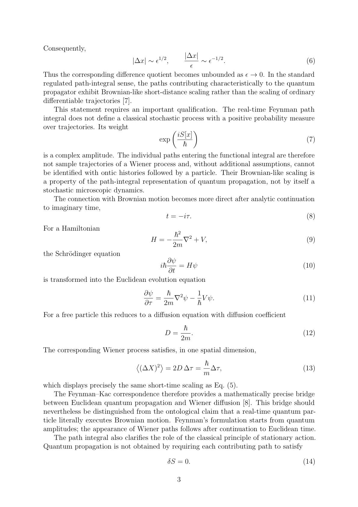
<figcaption class="paper-figure-caption"><b>Fig 2.</b> Low-resolution page preview, page 3</figcaption>
</figure>
<figure class="paper-figure-card">
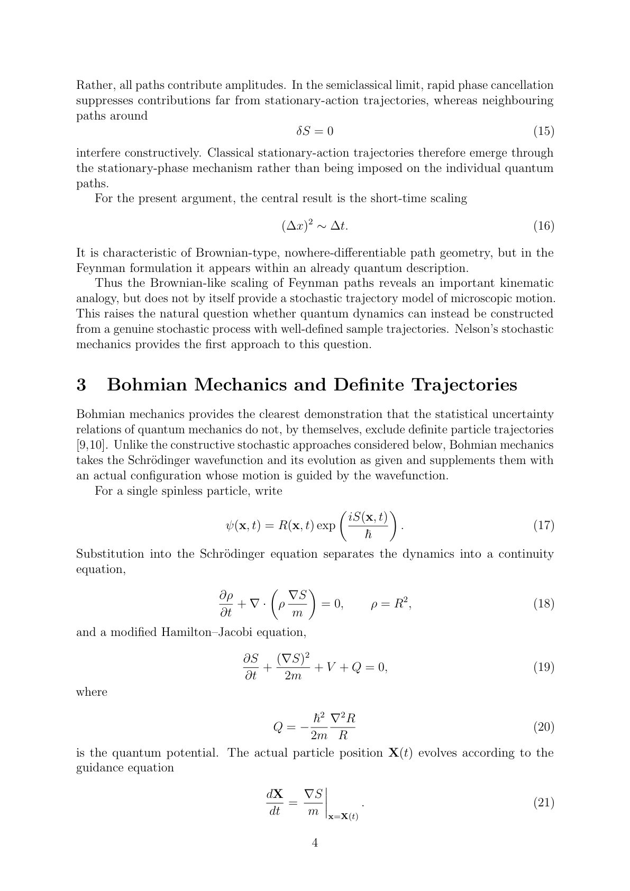
<figcaption class="paper-figure-caption"><b>Fig 3.</b> Low-resolution page preview, page 4</figcaption>
</figure>
<figure class="paper-figure-card">
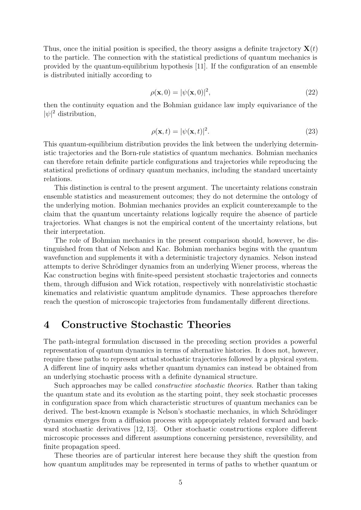
<figcaption class="paper-figure-caption"><b>Fig 4.</b> Low-resolution page preview, page 5</figcaption>
</figure>
<figure class="paper-figure-card">
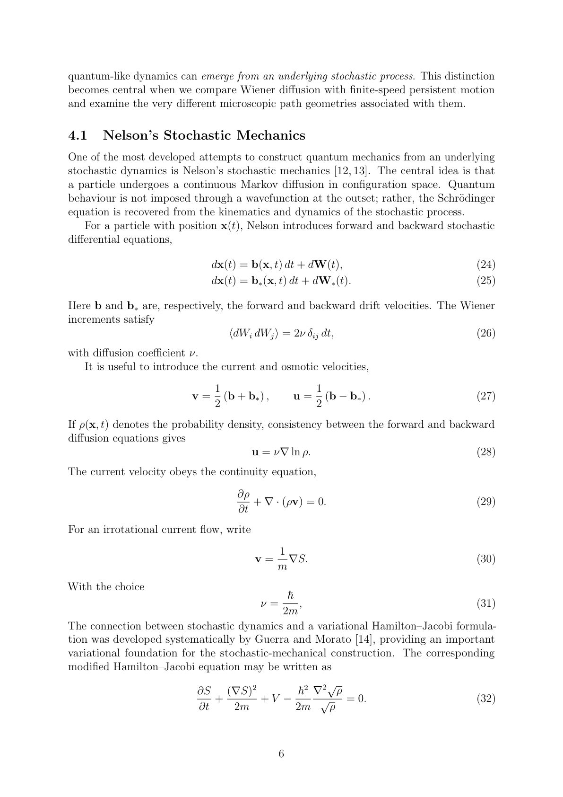
<figcaption class="paper-figure-caption"><b>Fig 5.</b> Low-resolution page preview, page 6</figcaption>
</figure>
</div>

<p><strong>Summary.</strong> This paper rigorously distinguishes between the statistical quantum uncertainty relations and the broader ontological uncertainty principle. By comparing Feynman paths, Bohmian mechanics, Nelson's stochastic approach, and Kac dynamics, the authors show that quantum mechanics can be consistent with multiple, fundamentally different underlying path structures. This suggests that the uncertainty relations alone are insufficient to rule out deterministic or finite-speed trajectory descriptions of quantum reality.</p>
<p><strong>Why it may be interesting.</strong> It provides a deep theoretical comparison of foundational quantum mechanics interpretations, linking stochastic processes (like those relevant in open quantum systems) to relativistic quantum field theory structures.</p>
<details>
<summary>Detailed structure</summary>
<p><strong>Main problem.</strong> The paper distinguishes between the statistical quantum uncertainty relations and the ontological claim of an underlying uncertainty principle, examining which underlying dynamics are compatible with quantum mechanics.</p>
<p><strong>Main result.</strong> The uncertainty relations are statistical constraints and do not preclude the existence of underlying microscopic trajectories, as demonstrated by models like Bohmian mechanics and finite-speed Kac dynamics.</p>
<p><strong>Method.</strong> The authors compare four distinct theoretical frameworks—Feynman paths, Nelson's stochastic mechanics, Bohmian mechanics, and Kac-Dirac dynamics—by analyzing their mathematical structure and limiting behaviors.</p>
<p><strong>Model / system.</strong> The analysis compares quantum dynamics described by the Schrödinger equation, the path integral formulation, deterministic Bohmian trajectories, and stochastic processes (Wiener diffusion and finite-speed Kac dynamics).</p>
<p><strong>Key observables.</strong> Statistical position-momentum uncertainty ($\Delta x \Delta p$), particle trajectories ($X(t)$), and probability density evolution ($
ho(x, t)$).</p>
<p><strong>Important parameters / regimes.</strong> Planck constant ($\hbar$), mass ($m$), diffusion coefficient ($D$), and the reversal rate ($\lambda$) in the Kac model.</p>
<p><strong>Assumptions / limitations.</strong> The core assumption is that the uncertainty relations are statistical consequences, not fundamental statements about the nature of reality or particle paths.</p>
<p><strong>Figures summary.</strong> The notes describe a hierarchy of descriptions linking finite-speed persistent paths $
ightarrow$ Kac limit $
ightarrow$ Brownian paths $
ightarrow$ Dirac-like dynamics $
ightarrow$ Wiener diffusion $
ightarrow$ Schrödinger dynamics.</p>
<p><strong>Paper structure.</strong> The paper proceeds by first establishing the distinction between statistical and ontological uncertainty, then examining how different path models (Feynman, Nelson, Bohm, Kac) reproduce quantum statistics while maintaining different underlying dynamical structures.</p>
</details>
<details>
<summary>Abstract</summary>
<p>A distinction should be made between quantum uncertainty relations and the broader uncertainty principle. The former are precise statistical consequences of quantum mechanics; the latter, when interpreted as excluding simultaneously definite conjugate variables and particle trajectories, is an additional ontological claim not implied by the uncertainty relations themselves.   We examine this distinction using Feynman paths, Nelson's stochastic mechanics, Bohmian mechanics, and finite-speed persistent Kac dynamics. Feynman paths exhibit Brownian-like short-time scaling, while Nelson derives Schrödinger dynamics from Wiener diffusion supplemented by dynamical assumptions. Bohmian mechanics, by contrast, reproduces quantum predictions while retaining definite particle trajectories. Kac dynamics provides continuous, piecewise differentiable finite-speed trajectories whose diffusive limit approaches Wiener kinematics. Moreover, after an appropriate Wick rotation, its coupled two-sector transport equations can be mapped to the Dirac equation.   These examples demonstrate that the experimentally established uncertainty relations are compatible with markedly different underlying path structures. They therefore do not, by themselves, rule out a microscopic trajectory description of quantum dynamics.</p>
</details>
<p><sub><a href="#top">↑ back to top</a></sub></p>

<p><a id="paper-2609.28631"></a></p>
<h3 id="universal-counterdiabatic-quantum-sensing"><a href="http://arxiv.org/abs/2609.28631v1">Universal Counterdiabatic Quantum Sensing</a></h3>
<p><strong>Authors:</strong> Stewart Morawetz, Anatoli Polkovnikov<br>
<strong>Type:</strong> theory · <strong>Category:</strong> other · <strong>PDF:</strong> <a href="https://arxiv.org/pdf/2609.28631v1">https://arxiv.org/pdf/2609.28631v1</a><br>
<strong>Analysis basis:</strong> full PDF text, analyzed in chunks
<strong>Topic relevance:</strong> <code>quantum measurements</code> <strong>3/5</strong> · <code>analog quantum simulation</code> <strong>1/5</strong></p>
<div class="figure-strip-hint">↔ Scroll figures horizontally</div>
<div class="paper-figures-scroll">
<figure class="paper-figure-card">
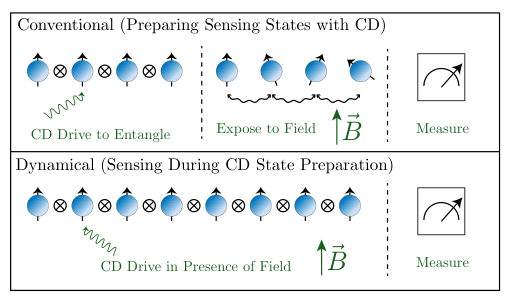
<figcaption class="paper-figure-caption"><b>Fig 1.</b> FIG. 1. A cartoon illustration of the dynamical sensing pro- cedure. Rather than first try to prepare some entangled state, which is highly fragile, and then use it for sensing, we perform sensing by inferring a parameter from its effect on state prepa- ration. By measuring immediately after the (CD-accelerated) state preparation, the damage done by more rapid decoher- ence of entangled states is mitigated.</figcaption>
</figure>
<figure class="paper-figure-card">
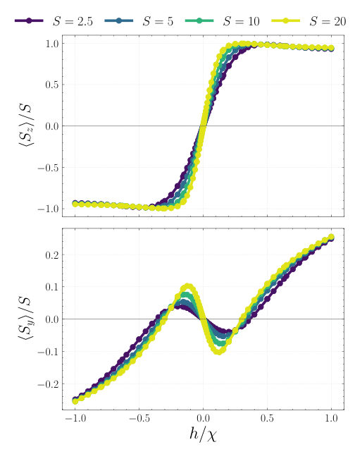
<figcaption class="paper-figure-caption"><b>Fig 2.</b> FIG. 2. The measured magnetization, normalized by S, im- mediately after performing the dynamical sensing protocol defined by Eq. (2). Here we choose sample values of τ = 1, ℓ= 6, ωmax = 3.7. The key feature is the response near h = 0: sharper growth indicates greater sensitivity to small h. This curve can be inverted, at least locally, to estimate h from a measured Sα.</figcaption>
</figure>
<figure class="paper-figure-card">
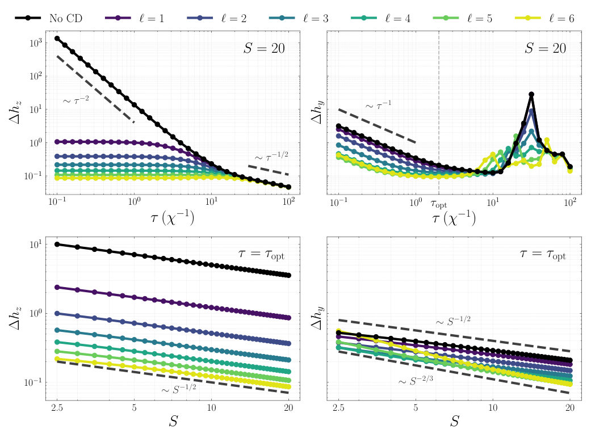
<figcaption class="paper-figure-caption"><b>Fig 3.</b> FIG. 3. The fluctuations in the estimator of the to-be-sensed parameter h, as inferred through measurements of ˆSz (left column) and ˆSy (right column). While ˆSz might seem to be the more natural measurement, it does not scale better with increasing S than performing S measurements independently with S = 1. If we instead measure ˆSy, we get scaling ∆hy ≲S−2/3 for sufficiently large ℓand S. For the universal CD protocol, we use ωmax = 3.7 in all plots shown.</figcaption>
</figure>
<figure class="paper-figure-card">
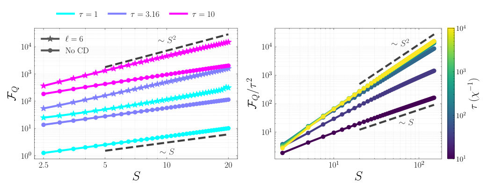
<figcaption class="paper-figure-caption"><b>Fig 4.</b> FIG. 4. The Quantum Fisher Information, bounding the sensitivity of any possible measurement, for our sensing protocol. On the left, we see that for an appropriate choice of τ CD driving enables beyond-SQL sensitivity, agreeing with what we saw for a particular observable. For ωmax = 3.7, this gives e.g. scaling FQ ∼S1.69 for τ ≈4.0. On the right, for long times where CD plays no role, we see that asymptotically as τ →∞the QFI scales quadratically in both S and τ.</figcaption>
</figure>
<figure class="paper-figure-card">
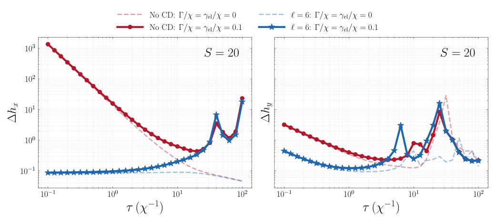
<figcaption class="paper-figure-caption"><b>Fig 5.</b> FIG. 5. The fluctuations in the estimator of the field h for different protocol durations, in the presence of weak noise. In the very slow, τ →∞limit, even weak noise destroys the sensitivity. On the other hand, if the noise is not too strong, there is still a strong signal in the regime τ ∼1/χ where the measurement of ⟨ˆSy⟩is most effective.</figcaption>
</figure>
</div>

<p><strong>Summary.</strong> This paper proposes a novel quantum sensing technique where measurement sensitivity is extracted during the accelerated preparation of an entangled state, rather than in a separate step. Using the Lipkin-Meshkov-Glick model and universal counterdiabatic driving, the authors demonstrate that the resulting sensitivity can surpass the Standard Quantum Limit. This approach is theoretically robust and mitigates decoherence issues inherent in traditional sensing protocols.</p>
<p><strong>Why it may be interesting.</strong> This work directly addresses the practical limitations of quantum sensing by integrating the sensing mechanism into the state preparation dynamics, which is a major topic in open quantum systems and quantum control.</p>
<details>
<summary>Detailed structure</summary>
<p><strong>Main problem.</strong> To develop a quantum sensing protocol that achieves high measurement sensitivity by gaining sensitivity during the accelerated preparation of an entangled state, thereby mitigating decoherence issues.</p>
<p><strong>Main result.</strong> The proposed method, utilizing universal counterdiabatic (CD) driving, can achieve sensitivity scaling beyond the Standard Quantum Limit (SQL) by measuring transverse magnetization components.</p>
<p><strong>Method.</strong> The core technique involves accelerating the adiabatic state preparation using universal CD driving, which modifies the Hamiltonian to suppress non-adiabatic excitations during the time evolution.</p>
<p><strong>Model / system.</strong> The analysis uses a toy Lipkin-Meshkov-Glick model describing 2S spin-1/2 particles with all-to-all connectivity. The dynamics are governed by interpolating Hamiltonians $H(\lambda) = \lambda H_0 + (1 - \lambda) H_1$.</p>
<p><strong>Key observables.</strong> The measured observable is the expectation value of the spin components, $\langle S_\alpha 
angle / S$, which is used to infer the strength of a small longitudinal field ($h$).</p>
<p><strong>Important parameters / regimes.</strong> The total spin $S$, the protocol duration $ au$, and the field strength $h$ are key parameters. Optimal sensitivity is found when measuring $\langle S_y 
angle$.</p>
<p><strong>Assumptions / limitations.</strong> The analysis assumes the applicability of CD driving, which is robust to parameter uncertainties, and that the measurement can be performed immediately after the accelerated preparation.</p>
<p><strong>Figures summary.</strong> Figure 1 contrasts standard vs. dynamical sensing. Figure 2 shows measured magnetization for varying $S$. Figure 3 compares fluctuation scaling ($\Delta h_z$ vs $\Delta h_y$) showing $\Delta h_y \sim S^{-2/3}$. Figure 4 shows QFI scaling, demonstrating beyond-SQL scaling with CD driving.</p>
<p><strong>Paper structure.</strong> The paper introduces the problem of decoherence in sensing, proposes the CD-accelerated preparation protocol using the LMG model, analyzes the sensitivity by measuring spin components ($\langle S_y 
angle$ vs $\langle S_z 
angle$), and theoretically bounds the performance using the Quantum Fisher Information (QFI).</p>
</details>
<details>
<summary>Abstract</summary>
<p>One of the primary applications of quantum mechanics is leveraging coherence to make incredibly sensitive measurements. One way to push the boundary of this sensitivity even further is to initially prepare a system in an entangled state, though the fragility of these states limits their usefulness. In this work, we propose a new approach by which sensitivity comes during the preparation of an entangled state, rather than first preparing the state and then using it for sensing. An adiabatic state preparation process is then accelerated by universal counterdiabatic driving, which is more robust to uncertainty in microscopic parameters than standard shortcuts to adiabaticity. Using a toy Lipkin-Meshkov-Glick model, we show that this approach can also lead to sensitivity beyond the Standard Quantum Limit.</p>
</details>
<p><sub><a href="#top">↑ back to top</a></sub></p>

<p><a id="paper-2609.28643"></a></p>
<h3 id="defect-poisoning-of-quantum-spin-ice"><a href="http://arxiv.org/abs/2609.28643v1">Defect Poisoning of Quantum Spin Ice</a></h3>
<p><strong>Authors:</strong> Alaric L. Sanders, Gautam K. Naik, Jonathan N. Hallén, Robin Schäfer<br>
<strong>Type:</strong> theory · <strong>Category:</strong> strongly correlated electrons · <strong>PDF:</strong> <a href="https://arxiv.org/pdf/2609.28643v1">https://arxiv.org/pdf/2609.28643v1</a><br>
<strong>Analysis basis:</strong> full PDF text, analyzed in chunks
<strong>Topic relevance:</strong> <code>analog quantum simulation</code> <strong>3/5</strong></p>
<div class="figure-strip-hint">↔ Scroll figures horizontally</div>
<div class="paper-figures-scroll">
<figure class="paper-figure-card">
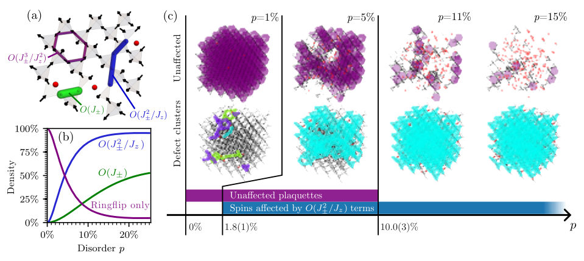
<figcaption class="paper-figure-caption"><b>Fig 1.</b> FIG. 1. (a) Pyrochlore lattice with spins in a “two-in-two-out” ice configuration. It illustrates defect-induced perturbative processes of order O(J±) (green) and O  J2 ±/Jz  (blue) between the missing spins (red spheres). The conventional ring- exchange process of order O  J3 ±/J2 z  is shown as a purple hexagon. (b) Fraction of spins affected by first-order processes (green) and by either first- or second-order processes (blue). The purple curve shows the fraction of spins whose dynamics are governed exclusively by third-order ring exchange. (c) Illustration of the connected networks formed by clean, unaffected hexagons (purple, top row), and by spins affected by lower-order processes...</figcaption>
</figure>
<figure class="paper-figure-card">
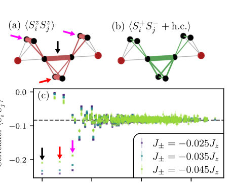
<figcaption class="paper-figure-caption"><b>Fig 2.</b> FIG. 2. Green’s function Monte Carlo simulation of a cluster with N = 432 −2 sites containing two magnetic vacancies (red spheres) separated by two lattice sites, which support a first-order process. Panels (a,b) show, respectively, the ⟨Sz i Sz j ⟩and ⟨S+ i S− j + h.c.⟩correlations at J±/Jz = −0.045. The bond that supports the first-order process is indicated by a black arrow, and the apical bonds are indicated by purple and red arrows. Thickness relative to the central bond is proportional to the absolute value of the correspond- ing correlator, while red (green) bonds indicate negative (positive) correlations. Panel (c) shows the distribution of nearest-neighbor correlators ⟨Sz i Sz j...</figcaption>
</figure>
<figure class="paper-figure-card">
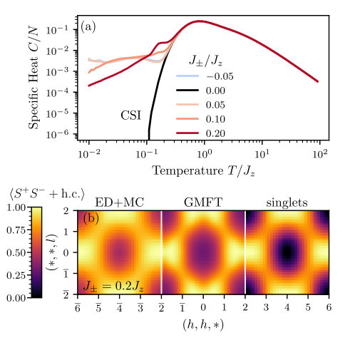
<figcaption class="paper-figure-caption"><b>Fig 3.</b> FIG. 3. Observables of the first-order-only model obtained from quantum-classical hybrid Monte Carlo (ED+MC) sim- ulations. We use a N ≈8192(1−p) cluster at p = 5% disor- der, averaged over 64 disorder realizations. Panel (a) shows the heat capacity for several values of J±/Jz, relative to the classical spin ice (CSI) result. Panel (b) shows the trans- verse ⟨S+ i S− j + h.c.⟩static structure factor for J± = 0.2Jz, computed within different theoretical models. The leftmost third shows results from ED+MC at T = 0.01Jz. The cen- ter third shows the same correlations within GMFT [14, 51], at T = 0. The right third of panel (b) is obtained by plac- ing two spins along all six bond orientations...</figcaption>
</figure>
<figure class="paper-figure-card">
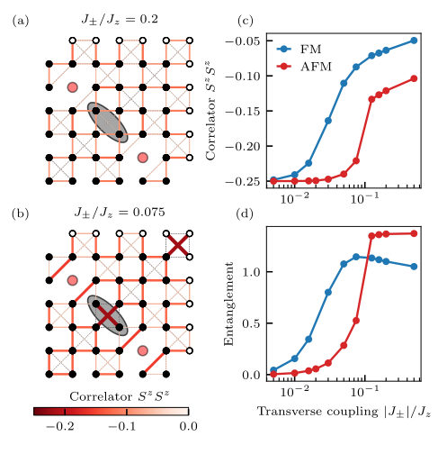
<figcaption class="paper-figure-caption"><b>Fig 4.</b> FIG. 4. Exact diagonalization results for the checkerboard lattice with two defects (marked in red). Panels (a,b) show the nearest-neighbor correlations |Sz i Sz j | for J±/Jz = 0.2 and J±/Jz = 0.075, respectively. The bond thickness and color encode the magnitude of the correlation. Markers high- lighted in white are periodic images of the sites. Panel (c) shows the correlation on the central bond, highlighted in gray, for ferromagnetic (FM, J± &lt; 0) and antiferromag- netic (AFM, J± &gt; 0) transverse couplings. Panel (d) shows the von Neumann entanglement entropy between the central dimer and the remainder of the system.</figcaption>
</figure>
<figure class="paper-figure-card">
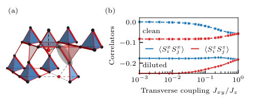
<figcaption class="paper-figure-caption"><b>Fig 5.</b> FIG. 5. Exact diagonalization results for the pyrochlore an- tiferromagnet. Panel (a) shows the nearest-neighbor SzSz</figcaption>
</figure>
</div>

<p><strong>Summary.</strong> This paper investigates how crystal imperfections, specifically magnetic vacancies, affect the fundamental quantum dynamics of quantum spin ice materials. Using advanced quantum simulations, the authors demonstrate that even low levels of dilution cause vacancy-induced fluctuations to dominate the system's low-energy behavior. This suggests that experimental signatures of ideal quantum spin ice may be significantly obscured by unavoidable disorder.</p>
<p><strong>Why it may be interesting.</strong> The work provides a crucial theoretical framework for interpreting experimental results in frustrated quantum magnets, directly impacting the interpretation of neutron scattering data and the search for exotic quantum states.</p>
<details>
<summary>Detailed structure</summary>
<p><strong>Main problem.</strong> Magnetic vacancies (dilution) in quantum spin ice (QSI) materials can qualitatively reshape the low-energy behavior, potentially obscuring the sought-after signatures of QSI.</p>
<p><strong>Main result.</strong> At low dilution levels (as low as 2%), vacancy-induced quantum fluctuations dominate the system dynamics, suggesting that current experimental measurements may be contaminated by disorder effects.</p>
<p><strong>Method.</strong> The study employs large-scale, unbiased quantum Monte Carlo simulations (GFMC) and exact diagonalization (ED+MC) to model the effects of disorder on the spin Hamiltonian.</p>
<p><strong>Model / system.</strong> The system is a U(1) quantum spin liquid model on the pyrochlore lattice, described by a nearest-neighbor Hamiltonian. Disorder is introduced via non-magnetic vacancies, leading to lower-order quantum fluctuations.</p>
<p><strong>Key observables.</strong> Nearest-neighbor expectation values ($\langle S^z_i S^z_j 
angle$ and $\langle S^+_i S^-_j + 	ext{h.c.} 
angle$), specific heat, and percolation thresholds for various spin clusters.</p>
<p><strong>Important parameters / regimes.</strong> Dilution probability ($p$), coupling ratios ($|J_{\pm}|/J_z$), and temperature regimes ($T \gg |J_{\pm}|$, $T \sim |J_{\pm}|$, $T \sim J^2_{\pm}/J_z$).</p>
<p><strong>Assumptions / limitations.</strong> The analysis relies on separating energy scales in the clean limit, but acknowledges that finite disorder blurs this separation. Mean-field approximations are used for cluster-cluster interactions.</p>
<p><strong>Figures summary.</strong> Figures illustrate the participation of spins in different order processes, show the formation of percolating clusters at low dilution, and compare simulation results to theoretical predictions like Gauge Mean-Field Theory (GMFT).</p>
<p><strong>Paper structure.</strong> The paper systematically analyzes the Hamiltonian, introduces disorder via vacancies, calculates observables using advanced quantum simulations, and concludes by arguing that defect-induced processes dominate the low-energy physics.</p>
</details>
<details>
<summary>Abstract</summary>
<p>The hunt for a material realization of quantum spin ice has motivated more than two decades of experimental effort. The candidate materials inevitably contain crystal imperfections, such as magnetic vacancies, whose effects are often disregarded. Here, we show that experimentally relevant levels of dilution can qualitatively reshape the low-energy behavior, as nearby vacancies generate quantum fluctuations that are absent in the clean system. Already at dilution levels as low as two percent, well below those reported in cerium-based pyrochlores, these vacancy-induced processes connect percolating clusters of spins and dominate over the conventional quantum-spin-ice dynamics. We therefore argue that magnetic vacancies in current experiments can strongly contaminate, and potentially completely obscure, the sought-after signatures of quantum spin ice. We support these conclusions using large-scale, unbiased quantum Monte Carlo simulations and exact diagonalization.</p>
</details>
<p><sub><a href="#top">↑ back to top</a></sub></p>

<p><a id="paper-2609.30202"></a></p>
<h3 id="incipient-superconductivity-and-tunable-chern-insulators-in-twisted-bernal-bilayer-trilayer-graphene"><a href="http://arxiv.org/abs/2609.30202v1">Incipient superconductivity and tunable Chern insulators in twisted Bernal bilayer-trilayer graphene</a></h3>
<p><strong>Authors:</strong> Derek Waleffe, Aryana Bhattacharyya, Manish Kumar, Eric Maginnis, Anna Okounkova, Tobias Faehndrich, Kenji Watanabe, Takashi Taniguchi, Joshua Folk, Matthew Yankowitz<br>
<strong>Type:</strong> experiment · <strong>Category:</strong> strongly correlated electrons · <strong>PDF:</strong> <a href="https://arxiv.org/pdf/2609.30202v1">https://arxiv.org/pdf/2609.30202v1</a><br>
<strong>Analysis basis:</strong> full PDF text, analyzed in chunks
<strong>Topic relevance:</strong> <code>analog quantum simulation</code> <strong>3/5</strong></p>
<div class="figure-strip-hint">↔ Scroll figures horizontally</div>
<div class="paper-figures-scroll">
<figure class="paper-figure-card">
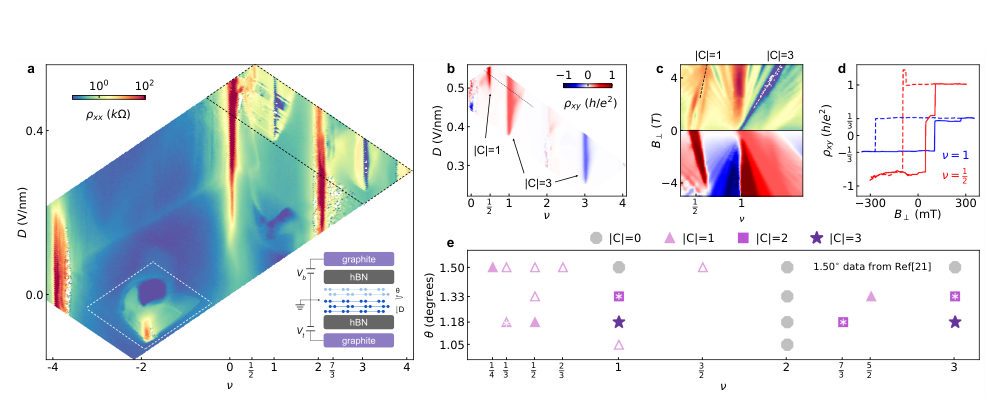
<figcaption class="paper-figure-caption"><b>Fig 1.</b> FIG. 1. Integer quantum anomalous Hall states in a device with θ = 1.18◦. a, Map of the longitudinal resistivity ρxx as a function of ν and D taken at base temperature and zero magnetic field. (inset) Schematic of the dual-gated twisted bilayer-trilayer graphene device. b, Map of the antisymmetrized Hall resistance ρxy at B = ±100 mT in the region denoted by the black dashed box in a. c, Landau fan diagram of symmetrized ρxx (top) and antisymmetrized ρxy (bottom) taken at Vt = 9.05 V sweeping Vb along the black dashed line in b. The black and white dashed lines indicate Středa slopes corresponding to C = 1 at ν = 1/2 and C = 3 at ν = 1. Color scales are the same as in a and b. d, Traces of...</figcaption>
</figure>
<figure class="paper-figure-card">
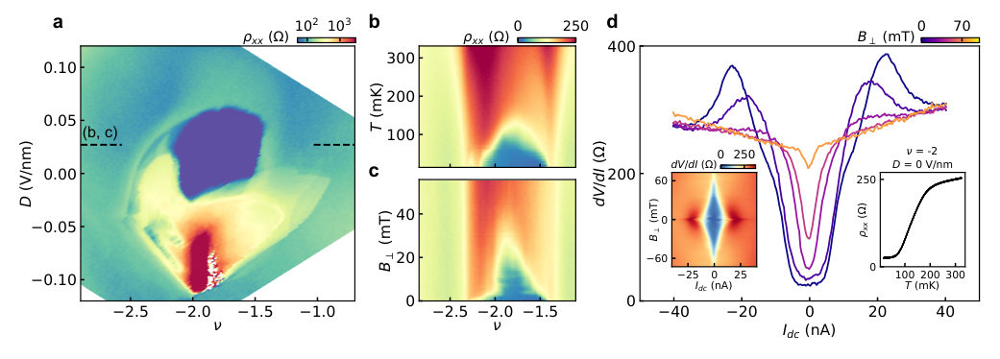
<figcaption class="paper-figure-caption"><b>Fig 2.</b> FIG. 2. Correlated insulator and incipient superconductivity at ν = −2. a, Zoomed in map of ρxx from the region of the white dashed box in Fig. 1a. b, Measurement of ρxx versus ν and T with fixed D = 0.027 V/nm (corresponding to the black dashed line in a). c, The same measurement versus B⊥. d, Measurement of dV /dI versus Idc at selected values of B⊥ taken at ν = −2 and D = 0. (left inset) Map of dV /dI versus Idc and B⊥. (right inset) Measurement of ρxx versus T.</figcaption>
</figure>
<figure class="paper-figure-card">
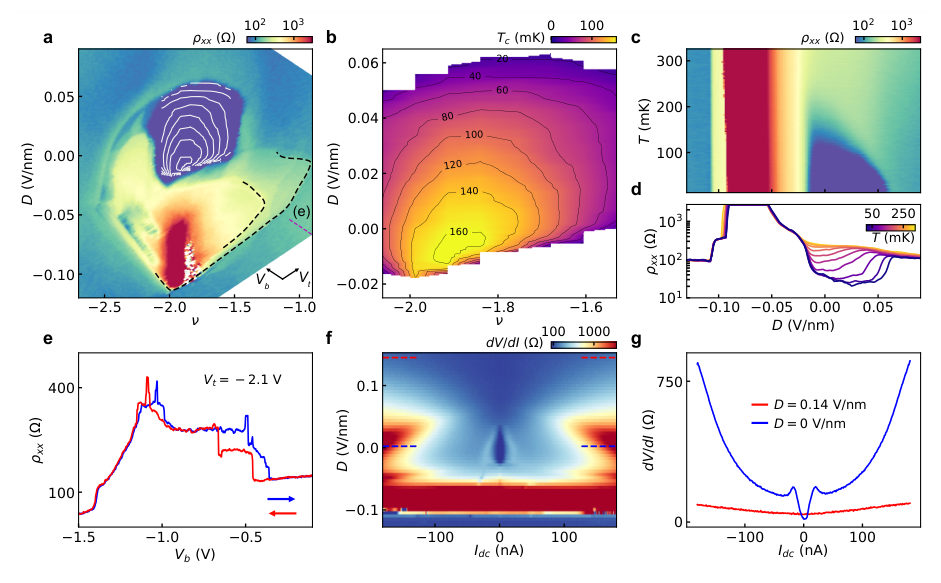
<figcaption class="paper-figure-caption"><b>Fig 3.</b> FIG. 3. Transition between a correlated insulator and a low-resistance pocket driven by D. a, The same map as in Fig. 2a with black dashed curves marking hysteretic features and white curves showing contour plots of approximately constant Tc. b, Color heat map showing an interpolated map of Tc versus ν and D. c, Measurement of ρxx versus D and T with fixed ν = −1.91. d, Selected line traces from c. e, Measurement of ρxx as Vb is swept back and forth. f, Map of dV /dI versus Idc and D at fixed ν = −2. g, Line traces of dV /dI versus Idc from f taken at D = 0 and D = 0.14 V/nm.</figcaption>
</figure>
<figure class="paper-figure-card">
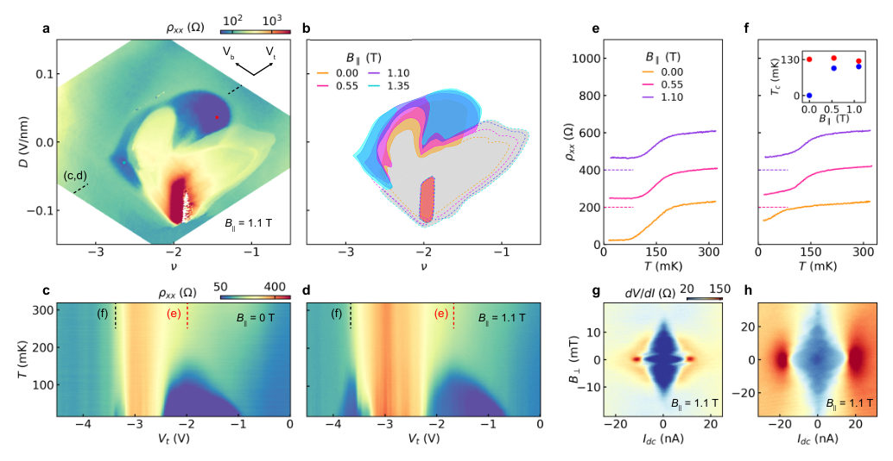
<figcaption class="paper-figure-caption"><b>Fig 4.</b> FIG. 4. Evolution with in-plane magnetic field. a, Map of ρxx versus ν and D taken at B∥= 1.1 T. b, Schematic of the evolution of the halo region for selected values of B∥. The gray region denotes metallic states, with the boundary of the halo indicated by the dashed curves. The red region denotes the correlated insulator. The solid colored regions denote low-resistance pockets. c, Measurement of ρxx versus Vt and T with fixed Vb = −1.85 V at B∥= 0 (along the direction indicated by the black dashed line in a). d, The same map taken with B∥= 1.1 T. e, Measurements of ρxx versus T for selected values of B∥, taken at the position indicated by the corresponding dashed line in c-d. Curves are...</figcaption>
</figure>
<figure class="paper-figure-card">
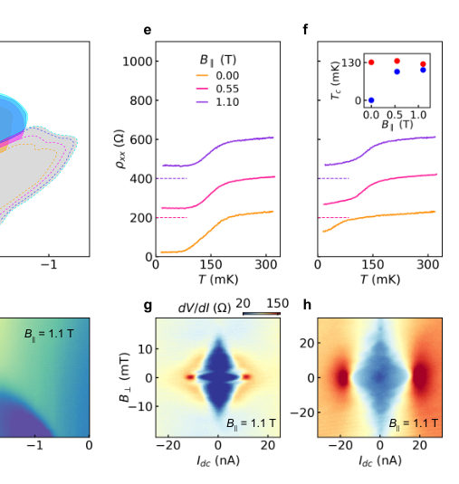
<figcaption class="paper-figure-caption"><b>Fig 5.</b> Figure 4a shows ρxx around ν = −2 at an in-plane magnetic field of B∥= 1.1 T. We find that B∥enlarges the halo without destroying the low-resistance pocket. Notably, a second region of sharply suppressed ρxx forms along the leftmost edge of the halo, growing out of a tail of slightly reduced resistance that, at B = 0, is al- ready connected to the zero-field pocket (Fig. 2a). Fig- ure 4b traces this evolution schematically (see Fig. S14). The zero-field pocket expands slightly and shifts toward higher ν and D up to B∥≈1.35 T. The low-resistance tail grows rapidly, and eventually the region connecting them is pinched off by an expansion of the metallic re- gion inside the halo, leaving two...</figcaption>
</figure>
</div>

<p><strong>Summary.</strong> This work reports on the discovery of incipient superconductivity and tunable Chern insulators in twisted Bernal bilayer-trilayer graphene. By controlling the twist angle and doping, the system allows for the precise tuning of topological invariants and the emergence of superconducting pairing. This makes the material a highly versatile platform for studying correlated electronic phenomena.</p>
<p><strong>Why it may be interesting.</strong> The ability to interface tunable topological states (Chern insulators) directly with superconducting pairing in a single, gate-tunable 2D material platform is highly relevant for realizing novel quantum electronic devices.</p>
<details>
<summary>Detailed structure</summary>
<p><strong>Main problem.</strong> The study investigates the emergence of superconductivity and tunable Chern insulating states in twisted Bernal bilayer-trilayer graphene.</p>
<p><strong>Main result.</strong> The authors report observing incipient superconductivity, characterized by a low-resistance pocket, and tunable Chern insulators in this single, gate-controllable van der Waals system.</p>
<p><strong>Method.</strong> Transport measurements ($
ho_{xx}, 
ho_{xy}$) are performed using dual-gated Hall bar devices across varying twist angles and doping levels, supplemented by Landau fan analysis.</p>
<p><strong>Model / system.</strong> The physical platform is twisted Bernal bilayer-trilayer graphene encapsulated by hBN, forming moiré superlattices. The system's electronic properties are controlled by tuning the twist angle ($  heta$) and the carrier density/displacement field ($D$).</p>
<p><strong>Key observables.</strong> Chern numbers ($|C|$), critical temperature ($T_c$), critical current ($I_c$), and longitudinal/Hall resistivity ($
ho_{xx}, 
ho_{xy}$).</p>
<p><strong>Important parameters / regimes.</strong> Twist angles ($ heta \approx 1.05^\circ$ to $1.50^\circ$), moiré filling factor ($
u$), and in-plane magnetic field ($B_{\parallel}$).</p>
<p><strong>Assumptions / limitations.</strong> The superconductivity observed is described as 'incipient' because the resistance does not fully drop to zero, and the analysis relies on gate-tunability to control topology.</p>
<p><strong>Figures summary.</strong> Figures map out $
ho_{xx}$ and $
ho_{xy}$ across doping/displacement fields, showing Chern insulator plateaus and superconducting dome structures, with additional figures detailing the field dependence of these features.</p>
<p><strong>Paper structure.</strong> The paper systematically maps out the phase diagram by varying twist angle and doping, first identifying Chern insulator states, then observing the correlated insulator at $
u=-2$, and finally detailing the superconducting pocket and its response to magnetic fields.</p>
</details>
<details>
<summary>Abstract</summary>
<p>Moiré superlattices assembled by twisting Bernal and rhombohedral multilayer graphene host a rich set of interaction-driven magnetic and topological states, yet superconductivity has not been observed in these systems except in proximity to a transition-metal dichalcogenide. Here we report incipient superconductivity and tunable Chern insulators in twisted Bernal bilayer-trilayer graphene encapsulated by hexagonal boron nitride. Across twist angles from $θ= 1.05^\circ$ to $1.50^\circ$, Chern insulators form at integer and fractional moiré fillings for electron doping, with Chern numbers up to |C| = 3 set by twist angle and tuned by doping. At $θ= 1.18^\circ$, a symmetry-broken metallic region forms for hole doping and hosts a trivial insulator at band filling $ν= -2$. Displacement field alone drives this insulator into a pocket of incipient superconductivity with a sharp transition, a well-defined critical current, and a critical temperature that peaks near the insulating boundary, although the resistance does not fall to zero. In-plane magnetic field expands the pocket, which persists to more than four times the weak-coupling Pauli limit, and stabilizes a second pocket in which Fraunhofer-like modulation of the critical current signals phase-coherent pairing. Twisted Bernal bilayer-trilayer graphene thus offers a single gate-tunable system in which pairing can be interfaced with Chern insulators whose topology is itself an adjustable parameter.</p>
</details>
<p><sub><a href="#top">↑ back to top</a></sub></p>

<p><a id="paper-2609.30195"></a></p>
<h3 id="loan-portfolio-optimization-with-variational-quantum-algorithms"><a href="http://arxiv.org/abs/2609.30195v1">Loan Portfolio Optimization with Variational Quantum Algorithms</a></h3>
<p><strong>Authors:</strong> Balaganchi A. Bhargava, Kamlesh Kumar, Gouranga Dinda, Aniruddha Biswas, Vijay S. Rao, Debarag Banerjee, Arun Sehrawat<br>
<strong>Type:</strong> both · <strong>Category:</strong> quantum information and computing · <strong>PDF:</strong> <a href="https://arxiv.org/pdf/2609.30195v1">https://arxiv.org/pdf/2609.30195v1</a><br>
<strong>Analysis basis:</strong> full PDF text, analyzed in chunks
<strong>Topic relevance:</strong> <code>QC/QI experiment</code> <strong>3/5</strong></p>
<div class="figure-strip-hint">↔ Scroll figures horizontally</div>
<div class="paper-figures-scroll">
<figure class="paper-figure-card">
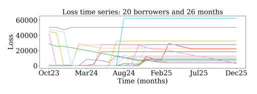
<figcaption class="paper-figure-caption"><b>Fig 1.</b> FIG. 1. Loss time series (Lit) for 20 randomly selected bor- rowers in different colors. Each series contains 26 monthly observations from October 2023 to December 2025, excluding November 2024. For borrower i at time t, the loss is propor- tional to the product of PD and EAD, where EAD is taken as the outstanding principal. As loans amortize, the outstand- ing principal decreases, reducing loss; however, rising PD can offset this effect. The observed loss trajectories reflect the combined influence of these two factors over time.</figcaption>
</figure>
<figure class="paper-figure-card">
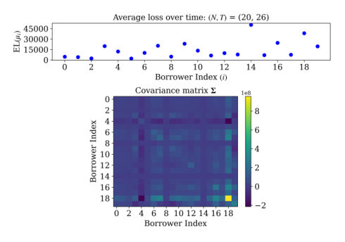
<figcaption class="paper-figure-caption"><b>Fig 2.</b> FIG. 2. For the same set of 20 borrowers as Fig. 1, the top plot shows the expected losses µ, while the bottom heatmap presents the covariance matrix Σ of borrower losses. The expected losses capture the portfolio’s expected risk, whereas the covariance matrix reflects the unexpected risk due to loss correlations across borrowers. Since the expected losses are point estimators, uncertainty intervals can be obtained from the diagonal entries of the covariance matrix; the square root of each diagonal element gives the corresponding standard deviation.</figcaption>
</figure>
<figure class="paper-figure-card">
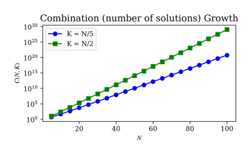
<figcaption class="paper-figure-caption"><b>Fig 3.</b> FIG. 3. Growth of the LPO solution space with the number of borrowers, N, for K = N/2 (50% selection) and K = N/5 (20% selection).</figcaption>
</figure>
<figure class="paper-figure-card">
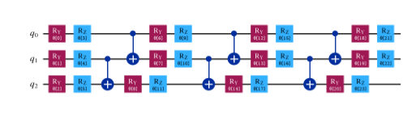
<figcaption class="paper-figure-caption"><b>Fig 4.</b> FIG. 4. The PQC corresponding to the EfficientSU2 ansatz available in Qiskit [41, 42] and defined in Eq.(19). Here, the number of qubits is n = 3, and the number of layers is L = 3. Each layer consists of parameterized single-qubit rotation gates Ry and Rz, represented by red and blue rectan- gular blocks, respectively, followed by entangling controlled- NOT (CX) gates acting between qubits a and a + 1, repre- sented by a control dot connected to a target ⊕symbol. The qubits, labeled q0, · · · , qa, · · · , qn−1, are represented by hori- zontal wires. Here, each variational parameter is denoted by θ with a single index, rather than the two-index notation used in Eq. (20).</figcaption>
</figure>
<figure class="paper-figure-card">
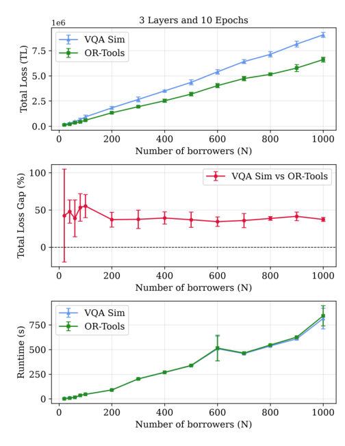
<figcaption class="paper-figure-caption"><b>Fig 5.</b> FIG. 5. Scaling behavior for K = N/2 using the full PCE described in (23). The top, middle, and bottom panels show the portfolio loss, relative gap, and runtime as functions of the problem size N. For each value of N, the marker de- notes the mean over five random instances sampled from the dataset of 2012 borrowers, while the error bars represent the corresponding 95% confidence intervals. The top panel com- pares the portfolio total loss obtained by VQA simulation in Qiskit and OR-Tools applied to the LCBO model described in Sec. III. The middle panel shows the relative gap (%) be- tween the solution qualities of VQA and OR-Tools, as defined in Eq. (28). The bottom panel shows the VQA...</figcaption>
</figure>
</div>

<p><strong>Summary.</strong> This work applies variational quantum algorithms to solve large-scale Loan Portfolio Optimization problems, which are formulated as QUBOs. To handle the massive number of variables, the authors use Pauli Correlation Encoding (PCE) to map the problem onto limited qubits. The results confirm the feasibility of this quantum approach on current hardware, demonstrating performance within 10% of classical simulations for large instances.</p>
<p><strong>Why it may be interesting.</strong> While the application is in finance, the core methodology involves mapping a complex combinatorial optimization problem onto a QUBO Hamiltonian and utilizing advanced encoding techniques (PCE) to manage resource constraints on near-term quantum hardware, which is relevant to quantum algorithm development.</p>
<details>
<summary>Detailed structure</summary>
<p><strong>Main problem.</strong> The paper addresses Loan Portfolio Optimization (LPO), a large-scale combinatorial problem aimed at minimizing credit risk by selecting optimal borrower portfolios.</p>
<p><strong>Main result.</strong> The framework demonstrates the feasibility of using Pauli Correlation Encoding (PCE) with Variational Quantum Algorithms (VQA) to tackle large-scale LPO problems, achieving results within 10% of simulation benchmarks on superconducting hardware.</p>
<p><strong>Method.</strong> The complex LPO problem is formulated as a Quadratic Constrained Binary Optimization (QCBO) and transformed into a QUBO model suitable for VQA solvers. PCE is employed to encode variables efficiently onto limited qubits.</p>
<p><strong>Model / system.</strong> The model uses real-world microfinance data to calculate expected and unexpected losses, forming a quadratic objective function. This is mapped onto a QUBO Hamiltonian solvable by VQA on superconducting quantum hardware.</p>
<p><strong>Key observables.</strong> Objective value (portfolio risk), objective-value gap (comparing VQA to classical solvers), and the relative difference between experimental and simulated objective values.</p>
<p><strong>Important parameters / regimes.</strong> Weighting parameters ($\alpha, eta$) balancing expected vs. unexpected loss; problem size up to 1500 variables; qubit count limitations.</p>
<p><strong>Assumptions / limitations.</strong> Assumptions include zero accrued interest for EAD and a Recovery Rate of 0, leading to Loss Given Default (LGD) = 1. The study also notes that the computational advantage over classical methods is not established.</p>
<p><strong>Figures summary.</strong> Figures illustrate the loss time series, the expected loss vector and covariance matrix for a small instance, and portfolio-level comparisons (efficient-frontier-like plots).</p>
<p><strong>Paper structure.</strong> The paper first formulates LPO as a QCBO, transforms it to QUBO, and introduces PCE for qubit efficiency. It then details the loss calculations using credit scores and finally benchmarks the VQA approach against classical solvers on both simulation and superconducting hardware.</p>
</details>
<details>
<summary>Abstract</summary>
<p>Loan portfolio optimization (LPO) seeks portfolios that minimize credit risk while satisfying practical selection constraints. Accounting for portfolio-level risk requires modeling not only expected losses but also loss variability and borrower-default correlations, leading to a large-scale combinatorial optimization problem whose complexity grows rapidly with portfolio size. In this work, we formulate LPO as a Quadratic Constrained Binary Optimization (QCBO) problem that jointly captures expected and unexpected losses and transform the resulting formulation into a Quadratic Unconstrained Binary Optimization (QUBO) model suitable for variational quantum optimization. To address the limited qubit resources of current quantum hardware, we employ Pauli Correlation Encoding (PCE), which enables a large number of portfolio-selection variables to be represented using comparatively few qubits. The proposed framework is evaluated on a real-world microfinance dataset comprising 2012 borrowers. For problem instances with up to 1000 portfolio-selection variables, we benchmark classical simulations of a variational quantum algorithm (VQA) against Google OR-Tools under matched time budgets, obtaining feasible portfolios with an objective-value gap of about 40% across all sizes. We further implement the framework on superconducting quantum hardware for instances containing up to 1500 variables. Across these instances, the experimentally obtained objective values are within 10% of the corresponding simulation results. These findings demonstrate the feasibility of applying PCE-based variational quantum optimization to large-scale loan portfolio optimization under current quantum hardware limitations.</p>
</details>
<p><sub><a href="#top">↑ back to top</a></sub></p>

<p><a id="paper-2609.30171"></a></p>
<h3 id="optimal-spectrum-estimation"><a href="http://arxiv.org/abs/2609.30171v1">Optimal spectrum estimation</a></h3>
<p><strong>Authors:</strong> Ainesh Bakshi, Apoorv Vikram Singh, Xinyu Tan<br>
<strong>Type:</strong> theory · <strong>Category:</strong> quantum information and computing · <strong>PDF:</strong> <a href="https://arxiv.org/pdf/2609.30171v1">https://arxiv.org/pdf/2609.30171v1</a><br>
<strong>Analysis basis:</strong> full PDF text, analyzed in chunks
<strong>Topic relevance:</strong> <code>quantum measurements</code> <strong>3/5</strong></p>
<div class="figure-strip-hint">↔ Scroll figures horizontally</div>
<div class="paper-figures-scroll">
<figure class="paper-figure-card">

<figcaption class="paper-figure-caption"><b>Fig 1.</b> Low-resolution page preview, page 2</figcaption>
</figure>
<figure class="paper-figure-card">

<figcaption class="paper-figure-caption"><b>Fig 2.</b> Low-resolution page preview, page 3</figcaption>
</figure>
<figure class="paper-figure-card">

<figcaption class="paper-figure-caption"><b>Fig 3.</b> Low-resolution page preview, page 4</figcaption>
</figure>
<figure class="paper-figure-card">

<figcaption class="paper-figure-caption"><b>Fig 4.</b> Low-resolution page preview, page 5</figcaption>
</figure>
<figure class="paper-figure-card">

<figcaption class="paper-figure-caption"><b>Fig 5.</b> Low-resolution page preview, page 6</figcaption>
</figure>
</div>

<p><strong>Summary.</strong> This paper provides theoretical bounds on the minimum number of quantum state copies required to accurately estimate the spectrum of an unknown quantum state. It achieves optimal complexity rates by developing a sophisticated framework that combines eigenvalue projection with Chebyshev moment matching. This work is crucial for understanding the fundamental resource costs associated with quantum state characterization.</p>
<p><strong>Why it may be interesting.</strong> The rigorous determination of sample complexity bounds for quantum state tomography and spectral estimation is fundamental for designing practical quantum algorithms and understanding the resource requirements of quantum measurements.</p>
<details>
<summary>Detailed structure</summary>
<p><strong>Main problem.</strong> The paper addresses the problem of optimally estimating the spectrum of an unknown quantum state $
ho$ using the minimum number of copies.</p>
<p><strong>Main result.</strong> It establishes the optimal copy complexity for spectrum estimation, achieving bounds of $O(d^2/\min\{1, (\varepsilon \log d)^4\})$ or $O(d^2/\min\{1, (\varepsilon \log d)^2\})$ for entangled measurements.</p>
<p><strong>Method.</strong> The approach combines a two-step process: estimating large eigenvalues via projection, and then reconstructing the small eigenvalues by matching Chebyshev moments.</p>
<p><strong>Model / system.</strong> The system is an unknown $d$-dimensional quantum state, represented by a density matrix $
ho$. The analysis relies heavily on functional analysis tools like Chebyshev polynomials and moment matching techniques.</p>
<p><strong>Key observables.</strong> The estimated spectrum $\mathbf{b}_\alpha$ and the true spectrum $ ext{spec}(
ho)$; the total variation distance ($  ext{dTV}$) is the primary error metric.</p>
<p><strong>Important parameters / regimes.</strong> Dimension $d$, desired accuracy $\varepsilon$, and the number of copies required for estimation.</p>
<p><strong>Assumptions / limitations.</strong> The analysis involves bounding the variance of moment estimates using Efron–Stein decompositions and making assumptions about the structure of the test functions (e.g., 1-Lipschitz continuity).</p>
<p><strong>Paper structure.</strong> The paper first sets up the problem context and compares existing bounds. It then details the technical machinery, including the 'Bucketing and estimating large eigenvalues' step, which reduces the problem to estimating the small-bucket state $\sigma$ using moment matching.</p>
</details>
<details>
<summary>Abstract</summary>
<p>We prove that the spectrum of an unknown $d$-dimensional quantum state can be estimated to error $\varepsilon$ in total variation distance using \[   O\!\left(d^2\min\left\{   \frac{1}{(\varepsilon\log d)^4},\;   \frac{1}{(\varepsilon\log d)^2}   \right\}\right) \] copies. This matches the recent lower bound of Wang. When restricted to unentangled measurements, we give an algorithm with an additional factor of $d$ in copy complexity, which we conjecture to be optimal.   We develop a framework for recovering the small eigenvalues of a quantum state by matching Chebyshev moments. We bound the variance of each Chebyshev moment estimate in terms of scalar derivatives of the corresponding polynomial, using classical and quantum Efron--Stein decompositions. Different rescalings of the Chebyshev polynomials balance approximation error and variance, yielding two regimes in our copy complexity bound.</p>
</details>
<p><sub><a href="#top">↑ back to top</a></sub></p>

<p><a id="paper-2609.30260"></a></p>
<h3 id="projected-amorphous-topological-insulators"><a href="http://arxiv.org/abs/2609.30260v1">Projected amorphous topological insulators</a></h3>
<p><strong>Authors:</strong> Archisman Panigrahi, Bitan Roy<br>
<strong>Type:</strong> theory · <strong>Category:</strong> disordered systems and neural networks · <strong>PDF:</strong> <a href="https://arxiv.org/pdf/2609.30260v1">https://arxiv.org/pdf/2609.30260v1</a><br>
<strong>Analysis basis:</strong> full PDF text, analyzed in chunks
<strong>Topic relevance:</strong> <code>analog quantum simulation</code> <strong>3/5</strong></p>
<div class="figure-strip-hint">↔ Scroll figures horizontally</div>
<div class="paper-figures-scroll">
<figure class="paper-figure-card">

<figcaption class="paper-figure-caption"><b>Fig 1.</b> FIG. 2. (a) Global phase diagram of Qi-Wu-Zhang model on PABs. Besides strong PATIs with the configuration-averaged BI ⟨B⟩= ±1, the system fosters fragile PATIs within the topological regime (|m0/t0| &lt; 2) for smaller x where ⟨B⟩= 0, but a small fraction of sites displays almost quantized LCM ≈B (Fig. 3). White shaded regions are PANIs, where ⟨B⟩and LCM vanish. Numerical calculations are performed down to x = 0.01 and at circled points with the thick black curve extrapolating them. The horizontal dashed x = 0 line is a singular limit, when the PAB becomes empty. (b) Dependence of average inter-site distance in the amorphous brane (ξ/a) on the half-spectral gap (∆/t0) in a square lattice of...</figcaption>
</figure>
<figure class="paper-figure-card">

<figcaption class="paper-figure-caption"><b>Fig 2.</b> FIG. 3. (a) Joint local density of states (LDOS) for closest to zero-energy modes with energies ±E0 for fragile PATIs with OBCs for x = 0.05, m0 = −1.75, and ℓmax = 0.05, where E0 = 0.168. (b) LCM for the same configuration and parameters as in (a). Panels (c) [(d)] is analogous to (a) [(b)], but with PBCs. For (c) E0 = 1.957 and ℓmax = 0.45. Panels (e)-(h) are analogous to (a)-(d), respectively, but for strong PATIs and x = 0.15. For (e) ℓmax = 0.015 and E0 = 0.055, and for (g) ℓmax = 0.14 and E0 = 1.251. Panels (i)-(l) are also analogous to (a)-(d), respectively, but for PANI with m0 = −2.5 and x = 0.15. For (i) ℓmax = 0.15 and E0 = 1.426, and for (k) ℓmax = 0.145 and E0 = 1.461. We set t...</figcaption>
</figure>
</div>

<p><strong>Summary.</strong> This paper introduces Projected Amorphous Topological Insulators (PATIs) to study topological phases in disordered materials. By analyzing the effective Hamiltonian derived from a parent crystal, the authors distinguish between strong, fragile, and trivial topological states based on quantized global and local invariants. The work characterizes a quantum phase transition between these states, providing a theoretical framework for disorder-induced topological phenomena.</p>
<p><strong>Why it may be interesting.</strong> The concept of topological protection surviving in highly disordered, amorphous media is crucial for developing robust quantum hardware, linking topological physics to disorder physics.</p>
<details>
<summary>Detailed structure</summary>
<p><strong>Main problem.</strong> To investigate the possibility of realizing topological insulators in the absence of crystalline order, specifically on amorphous lattices.</p>
<p><strong>Main result.</strong> The study identifies three distinct phases—strong PATIs, fragile PATIs, and Projected Amorphous Normal Insulators (PANIs)—and characterizes the quantum phase transition between the strong and fragile phases using a specific correlation length exponent.</p>
<p><strong>Method.</strong> The analysis constructs an effective Hamiltonian by integrating out residual sites from a parent crystal lattice and uses topological invariants (global and local) to diagnose the phases.</p>
<p><strong>Model / system.</strong> The system is the Projected Amorphous Topological Insulator (PATI), formed by randomly selecting a fraction ($x$) of sites from a parent crystal lattice (e.g., a square lattice for time-reversal symmetry breaking insulators).</p>
<p><strong>Key observables.</strong> Quantized global topological invariant ($  ext{BI}$), local topological marker ($  ext{LCM}$), and the mean correlation length exponent ($
u$).</p>
<p><strong>Important parameters / regimes.</strong> The concentration fraction $x$, which tunes the system between strong and fragile topological regimes, and the critical concentration $x_c$.</p>
<p><strong>Assumptions / limitations.</strong> The method is claimed to be general and applicable to any dimension, symmetry class, and parent crystal lattice.</p>
<p><strong>Figures summary.</strong> Figures illustrate the schematic construction of PATIs, the global phase diagram showing the dependence on $x$, and plots demonstrating the behavior of topological invariants ($  ext{BI}$ and $  ext{LCM}$) under different boundary conditions.</p>
<p><strong>Paper structure.</strong> The paper proceeds by defining the physical model and the effective Hamiltonian, analyzing the topological invariants to distinguish between strong, fragile, and trivial phases, and finally characterizing the quantum phase transition via scaling laws and critical exponents.</p>
</details>
<details>
<summary>Abstract</summary>
<p>We introduce projected amorphous topological insulators (PATIs) that despite containing only a fraction ($x$) of otherwise randomly selected {\it disconnected} sites of a parent crystal, feature a quantized global topological invariant ({\it strong} PATIs) when its effective Hamiltonian is constructed by integrating out the residual sites of the original lattice. Within the topological regime of the parent model, additionally, there exists a critical $x$ below which such systems foster a {\it fragile} PATI that only supports quantized local topological marker on a small fraction of sites therein. Both strong and fragile PATIs accommodate in-gap modes near the boundary. The system also hosts a normal insulator in the entire trivial parameter regime of the lattice-based model for any $x$, devoid of gapless boundary modes, for which both global topological invariant and local topological marker vanish. We demonstrate these {\it possibly} generic outcomes by starting with a parent square lattice-based model for time-reversal symmetry breaking insulators. Then the strong-to-fragile PATI quantum phase transition, tunable via $x$, is characterized by the {\it mean} correlation length exponent $ν\in (1.00,1.46)$.</p>
</details>
<p><sub><a href="#top">↑ back to top</a></sub></p>

<p><a id="paper-2609.29305"></a></p>
<h3 id="qaiji-ir-an-eight-layer-intermediate-representation-family-for-hybrid-quantum-classical-compilation"><a href="http://arxiv.org/abs/2609.29305v1">QaiJi IR: An Eight-Layer Intermediate Representation Family for Hybrid Quantum-Classical Compilation</a></h3>
<p><strong>Authors:</strong> Jun Ye<br>
<strong>Type:</strong> theory · <strong>Category:</strong> quantum information and computing · <strong>PDF:</strong> <a href="https://arxiv.org/pdf/2609.29305v1">https://arxiv.org/pdf/2609.29305v1</a><br>
<strong>Analysis basis:</strong> full PDF text, analyzed in chunks
<strong>Topic relevance:</strong> <code>quantum measurements</code> <strong>3/5</strong></p>
<div class="figure-strip-hint">↔ Scroll figures horizontally</div>
<div class="paper-figures-scroll">
<figure class="paper-figure-card">

<figcaption class="paper-figure-caption"><b>Fig 1.</b> Fig. 1. The five-axis semantic contract. Each axis fixes one class of obligation and the question it answers; together they connect the four logical semantics in §2.1.</figcaption>
</figure>
<figure class="paper-figure-card">

<figcaption class="paper-figure-caption"><b>Fig 2.</b> Fig. 2. QaiJi IR’s eight-layer family. Solid arrows show the main lowering path L5 →L0, associated with the pipeline in §3.3. Dashed connections link the main layers to dynamics in P and trace collection in T. L4 defines the semantic contract (§3.2).</figcaption>
</figure>
<figure class="paper-figure-card">

<figcaption class="paper-figure-caption"><b>Fig 3.</b> Fig. 3. The six-stage lowering pipeline and its interface invariants. The default facade builds context-free artifacts; explicit APIs perform pulse and ISA materialization when binding contexts are supplied.</figcaption>
</figure>
</div>

<p><strong>Summary.</strong> This paper presents QaiJi IR, a novel eight-layer intermediate representation designed to standardize the compilation process for hybrid quantum-classical algorithms. It enforces semantic correctness across multiple abstraction levels using a five-axis contract. The framework successfully validates the compilation path for measurement-based control flow, providing a structured tool for quantum compiler design.</p>
<p><strong>Why it may be interesting.</strong> It provides a rigorous, structured framework for managing the complex compilation stack required for near-term quantum hardware, which is crucial for any physicist working on implementing quantum algorithms on real devices.</p>
<details>
<summary>Detailed structure</summary>
<p><strong>Main problem.</strong> Existing hybrid quantum-classical compilers lack a common intermediate representation (IR) to enforce properties that must survive the lowering from high-level abstractions to physical hardware.</p>
<p><strong>Main result.</strong> The authors introduce QaiJi IR, an eight-layer family governed by a five-axis semantic contract, which successfully models and tests the compilation path for measurement-conditioned quantum programs.</p>
<p><strong>Method.</strong> They propose QaiJi IR, which uses a five-axis semantic contract (Data, Semantics, Lowering, Runtime, Verification) and an L4 SemanticIR to map abstract operations to ISA-neutral hardware actions.</p>
<p><strong>Model / system.</strong> The model is the compilation pipeline for hybrid quantum-classical computation, involving quantum circuits, classical control flow, and pulse/device representations.</p>
<p><strong>Key observables.</strong> The successful materialization of ALU/FPROC records and the execution of a conditional branch (skip/execute) on a virtual pulse processing unit (VPPU) for an active-reset case.</p>
<p><strong>Important parameters / regimes.</strong> The five axes of the semantic contract; the eight-layer structure of the IR.</p>
<p><strong>Assumptions / limitations.</strong> The current simulator cannot apply mid-circuit measurement collapse and continue the full dynamical trajectory, limiting validation to consistency checks rather than full physical fidelity.</p>
<p><strong>Figures summary.</strong> Figure 2 illustrates the eight-layer QaiJi IR structure with side connections for dynamics and traces; Figure 3 summarizes the six-stage lowering pipeline and its interface invariants.</p>
<p><strong>Paper structure.</strong> The paper introduces the problem of compiler abstraction gaps, details the QaiJi IR structure (eight layers, five-axis contract), describes the six-stage lowering pipeline, and validates the framework using measurement-conditioned and active-reset examples.</p>
</details>
<details>
<summary>Abstract</summary>
<p>Hybrid quantum-classical compilers exchange programs among circuit, control-flow, pulse, device, and physical representations. Existing formats make different abstraction choices, so the properties that must survive a lowering step are often enforced by tool-specific code rather than stated in a common intermediate representation (IR). We present QaiJi IR, an eight-layer family organized by a \emph{five-axis semantic contract} for data, semantics, lowering, runtime, and verification. Its L4 SemanticIR records the operation class, declared equivalence level, optimization role, and classical-feedback model as attributes, and maps operation classes to ISA-neutral hardware actions.   The prototype provides typed quantum and classical circuit nodes, OpenQASM~2 compatibility input, canonical OpenQASM~3 output, explicit rejection of unsupported constructs, and executable gate-convention checks. A representative measurement-conditioned program reaches a canonical QASM fixed point, acquires a measurement-to-condition edge, passes an exact aggregate consistency check, and produces a symbolic pulse template. For a one-bit active-reset case, device lowering materializes ALU/FPROC records and a conditional branch. Running the resulting virtual pulse processing unit (VPPU) program with externally supplied outcomes 0 and 1 respectively skips and executes the conditional drive. These tests validate the represented compiler path and binary branch behavior. They do not establish a physical feedback loop, because the simulator cannot yet apply mid-circuit measurement collapse and continue the same dynamical trajectory.</p>
</details>
<p><sub><a href="#top">↑ back to top</a></sub></p>

<p><a id="paper-2609.28881"></a></p>
<h3 id="reconfigurable-bus-based-quantum-router-for-modular-superconducting-processors"><a href="http://arxiv.org/abs/2609.28881v1">Reconfigurable bus-based quantum router for modular superconducting processors</a></h3>
<p><strong>Authors:</strong> Benzheng Yuan, chaojie Zhang, Yangyang Fei, Chuanbing Han, Haoran He, Huihui Sun, Bo Zhao, Fudong Liu, Weilong Wang, Zheng Shan<br>
<strong>Type:</strong> theory · <strong>Category:</strong> quantum information and computing · <strong>PDF:</strong> <a href="https://arxiv.org/pdf/2609.28881v1">https://arxiv.org/pdf/2609.28881v1</a><br>
<strong>Analysis basis:</strong> full PDF text, analyzed in chunks
<strong>Topic relevance:</strong> <code>QC/QI experiment</code> <strong>3/5</strong></p>
<div class="figure-strip-hint">↔ Scroll figures horizontally</div>
<div class="paper-figures-scroll">
<figure class="paper-figure-card">

<figcaption class="paper-figure-caption"><b>Fig 1.</b> Fig. 1 Conceptual schematic, equivalent circuit diagram, and flip-chip implementation blueprint of the quantum router. a, Schematic of the quan- tum router processor. Four computational interface qubits (Q1–Q4) are connected to two transmission buses (Lane A and Lane B) through a switch array (Riµ, where i ∈ {1, 2, 3, 4} denotes the qubit index and µ ∈{A, B} denotes the routing bus channel). By selectively closing specific switches, designated qubit pairs can be coupled to the same bus. The inset on the right illustrates the physical implementation of the switch, in which the ideal switch is realized by a nonlinear tunable inductive element based on a superconducting quantum interference...</figcaption>
</figure>
<figure class="paper-figure-card">

<figcaption class="paper-figure-caption"><b>Fig 2.</b> Fig. 2 Engineering effective ZZ couplings and operating regimes for parallel two-qubit gates. a,b, Effective ZZ coupling strengths, |ζqi,mµ/2π| (MHz), between the interface qubits Qi (shown in different col- ors) and two shared bus resonators, mA (solid lines) and mB (dashed lines), as functions of the port-coupler fre- quency. a, Sweep of the coupler frequency ωciA/2π. b, Sweep of the coupler frequency ωciB /2π. The light-blue shaded regions indicate the predefined idle operating win- dows, in which CiA operates in the low-frequency range and CiB in the high-frequency range. Within these win- dows, the effective ZZ couplings between the qubits and the bus resonators are suppressed to the...</figcaption>
</figure>
<figure class="paper-figure-card">

<figcaption class="paper-figure-caption"><b>Fig 3.</b> Fig. 3 CZ-gate pulses and system dynamics. a–c, Coupler-frequency modulation trajectories, ωC(t), for three groups of parallel two-qubit CZ gates: Group A, CZ12 ⊗CZ34; Group B, CZ13 ⊗CZ24; and Group C, CZ14 ⊗CZ23. The pulse waveforms are self-consistently compensated for differences in gate duration; for example, T12 &lt; T34 in a. Dashed segments indicate the waiting intervals during which a coupler that has completed its gate operation first is returned to and held at its idle frequency until the end of the parallel operation cycle. This synchronized scheduling preserves a common global clock and avoids the timing gaps that would arise from asynchronous execution of pulses with unequal...</figcaption>
</figure>
<figure class="paper-figure-card">

<figcaption class="paper-figure-caption"><b>Fig 4.</b> Fig. 4 Fidelities and state dynamics of parallel CZ gates. a, Quantitative comparison between the isolated average infidelities (blue bars, 1 −¯Fiso) and the parallel gate infidelities (red bars, 1 −Fparallel) for three represen- tative pairing configurations (Pair 1: CZ12 ⊗CZ34; Pair 2: CZ13 ⊗CZ24; Pair 3: CZ14 ⊗CZ23). b–d, Dynamics of the state errors, 1 −P|j⟩(t), for all 15 non-ground computa- tional basis states, |j⟩∈{|0001⟩, |0010⟩, . . . , |1111⟩}, driven by the synchronized pulse sequences for the three con- figurations. During the pulse flat-top period, many-body interactions induce transient coherent population transfers and excitations within the computational subspace. Fol-...</figcaption>
</figure>
<figure class="paper-figure-card">

<figcaption class="paper-figure-caption"><b>Fig 5.</b> Fig. 5 Impact of qubit decoherence times on parallel two-qubit gate fidelities. a–c, 2D parameter landscapes of the simulated average gate fidelity ¯F as a function of energy relaxation time T1 and pure dephasing time Tϕ for three parallel configurations: CZ12 ⊗CZ34 a, CZ13 ⊗CZ24 b, and CZ14 ⊗CZ23 c. In each panel, uniform coherence parameters are assumed across all participating interface qubits throughout the parameter sweep. The dashed black contours delineate the ¯F = 99.5% fidelity threshold boundary, while the grey dotted diagonal lines represent the symmetric coherence condition (T1 = Tϕ). The red star marks the critical coherence benchmark, defining the minimum symmetric coherence...</figcaption>
</figure>
</div>

<p><strong>Summary.</strong> This paper introduces a novel bus-based reconfigurable quantum router designed for modular superconducting quantum processors to overcome limitations in connectivity. By using flux-tunable SQUID couplers, the router enables parallel two-qubit gates and significantly reduces the required number of SWAP and CZ gates for complex circuits. The results establish the router as a critical, compiler-visible hardware resource for scaling quantum computation.</p>
<p><strong>Why it may be interesting.</strong> The work directly addresses the physical implementation challenges of scaling quantum processors by providing a hardware-level solution for interconnectivity and parallel gate scheduling, which is crucial for realizing large-scale quantum computation.</p>
<details>
<summary>Detailed structure</summary>
<p><strong>Main problem.</strong> Scaling superconducting quantum processors requires interconnects that provide non-local connectivity and parallel entangling operations, as nearest-neighbor couplings necessitate SWAP networks.</p>
<p><strong>Main result.</strong> The proposed bus-based router reduces the median SWAP count by up to 34% and the native CZ count by up to 20% compared to a 2D grid, demonstrating that enhanced connectivity and schedulable parallelism provide distinct benefits.</p>
<p><strong>Method.</strong> The authors used full-system Hamiltonian simulations, open-system analysis, and hardware-aware compilation to evaluate the router's performance on various quantum circuits.</p>
<p><strong>Model / system.</strong> The system is a superconducting quantum processor featuring a bus-based reconfigurable quantum router. It uses flux-tunable SQUID couplers to selectively connect interface qubits to two shared buses (Lane A and Lane B).</p>
<p><strong>Key observables.</strong> Gate error ($\sim 10^{-3}$ for parallel gates), reduction in SWAP count (up to 34%), reduction in CZ count (up to 20%), and circuit depth reduction (up to 20% for QAOA-MaxCut).</p>
<p><strong>Important parameters / regimes.</strong> The system relies on operating in a bufferless regime and requires dynamic, real-time hardware control.</p>
<p><strong>Assumptions / limitations.</strong> The analysis assumes the ability to selectively suppress idle interactions via destructive interference and that the router can be integrated into a compiler-visible resource model.</p>
<p><strong>Figures summary.</strong> The figures conceptually illustrate the router's schematic, the equivalent cQED circuit model, and the physical flip-chip layout connecting peripheral computational modules to the central router layer.</p>
<p><strong>Paper structure.</strong> The paper progresses from identifying the scaling bottleneck (SWAP networks) to proposing the physical architecture (SQUID-coupled buses), detailing the Hamiltonian and coupling mechanisms, and finally benchmarking the resource reduction benefits across specific quantum algorithms (QFT, QAOA-MaxCut).</p>
</details>
<details>
<summary>Abstract</summary>
<p>Scaling superconducting quantum processors requires interconnects that provide both non-local connectivity and parallel entangling operations. Nearest-neighbour couplings require distant interactions to be routed through SWAP networks, increasing the native two-qubit-gate count and potentially extending the circuit critical path. Here we introduce a bus-based reconfigurable quantum router for modular superconducting processors. Flux-tunable SQUID couplers selectively connect interface qubits to two shared buses, allowing destructive interference to suppress idle interactions while supporting two disjoint controlled-$Z$ (CZ) gates in parallel. Full-system Hamiltonian simulations yield parallel-gate errors at the level of $10^{-3}$, and open-system analysis identifies the coherence requirements for high-fidelity operation. We further assess the circuit-level consequences using hardware-aware compilation and resource-constrained scheduling. For 36-qubit quantum Fourier transform (QFT), QAOA-MaxCut and random-pairing circuits, the router reduces the median SWAP count by up to $34\%$ and the native CZ count by up to $20\%$ relative to a matched two-dimensional grid. End-to-end depth reduction is circuit dependent, reaching $20\%$ for QAOA-MaxCut but remaining negligible for the QFT despite its lower gate count. These results show that enhanced connectivity and schedulable parallelism provide distinct benefits, establishing the router as a compiler-visible hardware resource for modular superconducting quantum processors.</p>
</details>
<p><sub><a href="#top">↑ back to top</a></sub></p>

<p><a id="paper-2609.29890"></a></p>
<h3 id="syndrome-measurements-enable-deterministic-fault-tolerant-math384math-gates"><a href="http://arxiv.org/abs/2609.29890v1">Syndrome measurements enable deterministic fault-tolerant $T$ gates</a></h3>
<p><strong>Authors:</strong> Kishor Bharti, Tobias Haug, Andrew Tanggara<br>
<strong>Type:</strong> theory · <strong>Category:</strong> quantum information and computing · <strong>PDF:</strong> <a href="https://arxiv.org/pdf/2609.29890v1">https://arxiv.org/pdf/2609.29890v1</a><br>
<strong>Analysis basis:</strong> full PDF text, analyzed in chunks
<strong>Topic relevance:</strong> <code>quantum measurements</code> <strong>3/5</strong></p>
<div class="figure-strip-hint">↔ Scroll figures horizontally</div>
<div class="paper-figures-scroll">
<figure class="paper-figure-card">

<figcaption class="paper-figure-caption"><b>Fig 1.</b> FIG. 1. The two-rotation logical-T gadget for the Steane code. The factors A = X1Z2 and B = Y1Z4 satisfy AB = i ¯Z, with ¯Z = Z1Z2Z4, and have the same nonzero syndrome. The ideal rotations remain in the intermediate code D = C ⊕AC, a [[7, 2, 2]] code obtained by releasing one independent check, h = Zh1. The operators h and A act as logical Z and X on the extra encoded qubit. Syndrome measurement and feed- forward return the state to C with R ¯ Z(π/4) applied. The retained generator basis is described in Sec. III.</figcaption>
</figure>
<figure class="paper-figure-card">

<figcaption class="paper-figure-caption"><b>Fig 2.</b> FIG. 2. Physical compilation of RP1P2P3(θ), read from left to right. The Clifford Fj obeys FjPjF † j = Zj: take Fj as H, HS†, or I for Pj equal to X, Y , or Z, respectively. Every wire is one physical qubit. Only the central single-qubit rotation is non-Clifford when θ = π/4. With fault-free operations, the displayed circuit implements RP1P2P3(θ) exactly. Fault toler- ance requires the additional protection described in Secs. V and VI.</figcaption>
</figure>
<figure class="paper-figure-card">

<figcaption class="paper-figure-caption"><b>Fig 3.</b> FIG. 3. The protected fixed-code gate of Sec. V A (App. D.4). The 22-qubit data block consists of a [[15, 1, 3]] Reed–Muller block at outer qubit 1, a two-qubit Z-basis repetition block at qubit 2, and five unencoded qubits. Hats denote physical Pauli representatives after selective encoding, and primes de- note conjugation of the outer operators by CB; the measured representatives are given in Eq. (D11). The only non-Clifford operation is one transversal T-type layer; everything after it is a protected Pauli measurement or a Pauli-frame update, and the dashed measurement is executed only when y = −1. Each logical measurement consists of three measurements using veri- fied cat states...</figcaption>
</figure>
<figure class="paper-figure-card">

<figcaption class="paper-figure-caption"><b>Fig 4.</b> FIG. 4. Overview of the protected Golay logical T gate on an encoded input. Acceptance is followed by error correction using the retained checks, protected adaptive Pauli measure- ments and Pauli feed-forward, and final Golay correction. The first rejection triggers recovery of the original input and one retry; the second rejection gives a located abort. Exhausting an ancilla or correction retry cap, or finding no recovery hy- pothesis, also gives a located abort as specified in App. E.2.1. Figure S3 gives the complete circuit and monitor sequence.</figcaption>
</figure>
</div>

<p><strong>Summary.</strong> This paper presents a general mechanism to achieve deterministic, fault-tolerant logical T gates for stabilizer codes by utilizing the syndrome degree of freedom. The technique involves specific Pauli rotations followed by syndrome measurements and feed-forward corrections. This advances the field by providing a robust method to implement non-Clifford gates while maintaining error protection.</p>
<p><strong>Why it may be interesting.</strong> This work provides concrete, generalizable protocols for implementing crucial non-Clifford gates required for universal quantum computation using established error correction paradigms.</p>
<details>
<summary>Detailed structure</summary>
<p><strong>Main problem.</strong> The central challenge is implementing deterministic, fault-tolerant logical T gates, as non-Clifford gates are necessary for universal quantum computation but difficult to implement fault-tolerantly within stabilizer codes.</p>
<p><strong>Main result.</strong> The authors establish a general mechanism using syndrome measurements and a syndrome degree of freedom to deterministically implement a logical T gate on various stabilizer codes, tolerating single faults.</p>
<p><strong>Method.</strong> The method involves applying two Pauli rotations, performing a syndrome measurement, and using Clifford feed-forward to mediate the non-Clifford operation while analyzing the resulting intermediate code distance.</p>
<p><strong>Model / system.</strong> The work is based on stabilizer codes of distance $d \ge 2$. The mechanism leverages the syndrome degree of freedom to temporarily release a stabilizer check, effectively providing an extra logical qubit for the gate operation.</p>
<p><strong>Key observables.</strong> Logical T gate implementation, intermediate code distance ($\delta$), and the failure probability bound ($  ext{Pr}(    ext{Bad})$).</p>
<p><strong>Important parameters / regimes.</strong> Code distance ($d \ge 2$), physical error rate ($p$), and the number of elementary locations ($NG$).</p>
<p><strong>Assumptions / limitations.</strong> The analysis assumes the ability to precisely determine the intermediate code distance and that the process can tolerate single faults under local stochastic noise.</p>
<p><strong>Figures summary.</strong> Figure 1 illustrates the two-rotation logical-T gadget for the Steane code, detailing the sequence of rotations, syndrome measurement, and feed-forward steps.</p>
<p><strong>Paper structure.</strong> The paper progresses by first defining the problem (fault-tolerant T gates), then deriving the general mechanism using syndrome measurements (Theorem 1), analyzing the resulting intermediate code structure and its distance bounds (Theorems 2, 4, 5), and finally providing detailed fault-tolerance proofs and resource cost analyses.</p>
</details>
<details>
<summary>Abstract</summary>
<p>Non-Clifford gates are essential for universal quantum computation, yet implementing them fault-tolerantly remains a central challenge for stabilizer codes. Here, we show how a syndrome degree of freedom can mediate a logical non-Clifford gate. Releasing one stabilizer check makes an additional logical qubit available within the encoded data block. Two Pauli rotations, followed by syndrome measurement and Clifford feed-forward, then implement a deterministic logical $T$ gate on every stabilizer code of distance at least two, in a suitable logical basis. During the ideal rotations, the state remains in an intermediate stabilizer code whose distance we determine exactly. For pure codes with a balanced factorization, this distance grows with the original code distance, whereas the maximum weight of the stabilizer generators bounds the intermediate distance from above. We realize the mechanism in two circuits that tolerate a single fault under local stochastic circuit noise: a fixed 22-qubit construction admitting recursive error suppression and a direct Golay-code gate protected by measuring a stabilizer check transported through the non-Clifford rotation, which can recover the unknown encoded state even after rejection. Serial implementations with ancilla reuse, reset, and flexible two-qubit connectivity require at most 33 and 32 physical qubits, respectively. These results establish a general mechanism for logical non-Clifford gates and demonstrate how syndrome measurements and recovery can protect the intermediate evolution of encoded information.</p>
</details>
<p><sub><a href="#top">↑ back to top</a></sub></p>

<p><a id="paper-2609.30175"></a></p>
<h3 id="trading-circuit-depth-for-pulse-sparsity-in-chromatic-dynamical-decoupling"><a href="http://arxiv.org/abs/2609.30175v1">Trading Circuit Depth for Pulse Sparsity in Chromatic Dynamical Decoupling</a></h3>
<p><strong>Authors:</strong> Amy F. Brown, Daniel A. Lidar<br>
<strong>Type:</strong> both · <strong>Category:</strong> quantum information and computing · <strong>PDF:</strong> <a href="https://arxiv.org/pdf/2609.30175v1">https://arxiv.org/pdf/2609.30175v1</a><br>
<strong>Analysis basis:</strong> full PDF text, analyzed in chunks
<strong>Topic relevance:</strong> <code>QC/QI experiment</code> <strong>3/5</strong></p>
<div class="figure-strip-hint">↔ Scroll figures horizontally</div>
<div class="paper-figures-scroll">
<figure class="paper-figure-card">

<figcaption class="paper-figure-caption"><b>Fig 1.</b> FIG. 1. (a) C = 2: Minimum proper (distance-1 2-)coloring of a representative section of the IBM heavy-hex lattice, with the edge qubits of the underlying hexagonal lattice (bivalent in the bulk) colored red and the vertex qubits (trivalent in the bulk) colored green. (b) C = 5: Distance-3 5-coloring of the same section. (c) C = 3: Proper 3-coloring of the active red, green, and blue (RGB) interaction subgraph embedded in the IBM heavy-hex lattice; gray qubits are spectators and are not counted among the C colors. Note that the RGB qubits are the same in the C = 5 and C = 3 colorings. (d) Solid gray edges [black in (a-c)] represent intentional nearest-neighbor couplings corresponding to...</figcaption>
</figure>
<figure class="paper-figure-card">

<figcaption class="paper-figure-caption"><b>Fig 2.</b> FIG. 2. Illustration of the color assignment, Hadamard matrix, and DD sequences for C = 3.</figcaption>
</figure>
<figure class="paper-figure-card">

<figcaption class="paper-figure-caption"><b>Fig 3.</b> FIG. 3. Illustration of the color assignment, binary matrix B3, and CBDD sequences for C = 3, with the identity color-to-row map i = g(c) = c.</figcaption>
</figure>
<figure class="paper-figure-card">

<figcaption class="paper-figure-caption"><b>Fig 4.</b> FIG. 4. Illustration of the color assignment, Gray matrix G3, and CGDD sequences for C = 3, with the identity color-to-row map i = g(c) = c.</figcaption>
</figure>
<figure class="paper-figure-card">

<figcaption class="paper-figure-caption"><b>Fig 5.</b> FIG. 5. PRR as a function of the number of colors C for CWDD, i.e., row-optimized linear-depth CHaDD at fixed Hadamard column order (purple dots), CBDD (blue dots), and CGDD (green dots). Except at small C (all three coincide at C = 1; CGDD and CWDD have the same PRR for C = 2; and CWDD has lower PRR than CBDD for C = 2 and C = 4), CWDD has substantially greater PRR than CBDD or CGDD, while CBDD’s PRR is (2−21−C) times CGDD’s. The jumps in the CWDD curve occur because its circuit depth N = 2⌊log2 C⌋+1 changes discontinuously with C.</figcaption>
</figure>
</div>

<p><strong>Summary.</strong> This paper develops advanced Dynamical Decoupling sequences, such as CGDD, to combat decoherence in large qubit arrays. It analyzes the critical trade-off between sequence complexity (circuit depth) and pulse density (PRR). The findings establish PRR as a key metric for performance, guiding the development of more efficient error suppression techniques for near-term quantum hardware.</p>
<p><strong>Why it may be interesting.</strong> It provides concrete, hardware-aware metrics (PRR vs. Depth) for optimizing quantum error correction protocols, which is crucial for scaling quantum computation.</p>
<details>
<summary>Detailed structure</summary>
<p><strong>Main problem.</strong> The primary challenge is systematically suppressing decoherence and crosstalk in large, scaling qubit networks.</p>
<p><strong>Main result.</strong> The proposed Chromatic-Gray DD (CGDD) sequence is shown to be the best performer in the robust setting because it achieves the lowest Pulse Repetition Rate (PRR) while maintaining high state preservation.</p>
<p><strong>Method.</strong> The authors introduce and compare several Dynamical Decoupling (DD) sequences (CHaDD, CBDD, CGDD) by analyzing the trade-off between circuit depth and PRR.</p>
<p><strong>Model / system.</strong> The work models quantum systems using qubits, specifically referencing superconducting quantum processors like the 127-qubit IBM processor, and analyzing error suppression via graph colorings and pulse sequences.</p>
<p><strong>Key observables.</strong> State preservation (fidelity), Circuit Depth, and Pulse Repetition Rate (PRR).</p>
<p><strong>Important parameters / regimes.</strong> The number of colors ($C$), the graph structure (e.g., heavy-hex lattice), and the time scale of the experiment.</p>
<p><strong>Assumptions / limitations.</strong> The analysis often focuses on first-order error cancellation, and the advantage of sparser sequences diminishes when robust pulse error compensation is included.</p>
<p><strong>Figures summary.</strong> Figures illustrate graph colorings on the IBM lattice and show fidelity/pulse count comparisons between various DD sequences (CHaDD, CBDD, CGDD) over time.</p>
<p><strong>Paper structure.</strong> The paper develops the theory of Chromatic DD, introduces CBDD and CGDD as improvements over CHaDD, and validates these methods through state preservation experiments on real quantum hardware.</p>
</details>
<details>
<summary>Abstract</summary>
<p>Suppressing decoherence and crosstalk systematically across large networks of qubits is a pressing concern as qubit counts increase rapidly. General multi-qubit dynamical decoupling (DD) has historically been based on Hadamard matrices and orthogonal arrays, with instantaneous-pulse sequences whose circuit depth scales linearly with the number of qubits. Chromatic-Hadamard DD (CHaDD) improves upon these methods by properly coloring the hardware graph and assigning to each color a row of a Hadamard matrix, resulting in a circuit depth that scales linearly with the number of colors $C$, which can be as low as the chromatic number of the graph. Here, we explore the tradeoff between circuit depth and the pulse repetition rate (PRR), the average fraction of time steps in which a qubit is pulsed, i.e., a measure of pulse density. We introduce two single-axis sequences based on binary and Gray matrices, Chromatic-Binary DD (CBDD) and Chromatic-Gray DD (CGDD), which, for $C>2$, are special cases of non-minimum-depth CHaDD and achieve PRR $<2/C$ and PRR $=1/C$, respectively, compared with a PRR above $1/4$ for CHaDD, at the price of a circuit depth of $2^C$. In state preservation experiments on a $127$-qubit IBM processor with $C=3$, the less dense sequences outperform CHaDD at short times when the pulses are not robust; this advantage is largely eliminated by robust versions designed to compensate for coherent pulse errors, and among the robust sequences, CGDD uses the fewest pulses over a fixed protection time. Across non-robust $C=3$ and $C=5$ schedules, equal PRR on a fixed qubit subset is empirically associated with similar state preservation. Thus, the PRR serves as a practical figure of merit for chromatic DD whenever coherent pulse errors dominate.</p>
</details>
<p><sub><a href="#top">↑ back to top</a></sub></p>

<p><a id="paper-2609.30132"></a></p>
<h3 id="collective-thermalization-work-reliability-and-resource-bounds-in-a-population-inverted-dicke-otto-engine"><a href="http://arxiv.org/abs/2609.30132v1">Collective thermalization, work reliability, and resource bounds in a population-inverted Dicke Otto engine</a></h3>
<p><strong>Authors:</strong> Cler T. Garcez, Gabriella G. Damas, Norton G. de Almeida, G. D. de Moraes Neto<br>
<strong>Type:</strong> theory · <strong>Category:</strong> statistical mechanics · <strong>PDF:</strong> <a href="https://arxiv.org/pdf/2609.30132v1">https://arxiv.org/pdf/2609.30132v1</a><br>
<strong>Analysis basis:</strong> full PDF text, analyzed in chunks
<strong>Topic relevance:</strong> <code>non-equilibrium universality</code> <strong>2/5</strong> · <code>Dicke superradiance</code> <strong>1/5</strong> · <code>Full counting statistics</code> <strong>1/5</strong> · <code>Keldysh / 2PI / non-Gaussian methods</code> <strong>1/5</strong> · <code>Tavis-Cummings &amp; cavity-many-emitter</code> <strong>1/5</strong> · <code>analog quantum simulation</code> <strong>1/5</strong> · <code>correlated / nonlocal dissipation</code> <strong>1/5</strong> · <code>driven-dissipative phase transition</code> <strong>1/5</strong> · <code>methods for driven-dissipative</code> <strong>1/5</strong> · <code>quantum measurements</code> <strong>1/5</strong> · <code>scars &amp; prethermalization</code> <strong>1/5</strong></p>
<div class="figure-strip-hint">↔ Scroll figures horizontally</div>
<div class="paper-figures-scroll">
<figure class="paper-figure-card">

<figcaption class="paper-figure-caption"><b>Fig 1.</b> FIG. 1. Four-stroke collective Otto cycle. The compression and expansion change the gap while preserving the Dicke populations. The hot and cold contacts act at fixed gaps and move the populations toward their respective stationary distributions. The stationary-cycle condition identifies corner 5 with corner 1.</figcaption>
</figure>
<figure class="paper-figure-card">

<figcaption class="paper-figure-caption"><b>Fig 2.</b> FIG. 2. Complete-reset extracted work per cycle as a func- tion of N for passive and inverted hot branches, illustrating saturation, Eq. (27), versus extensivity, Eq. (28). Parameters: Ωc = 1, Ωh = 3, xc = 1, xh = +0.375 for the passive branch, and xh = −0.375 for the inverted branch. Finite-contact power is shown separately in Fig. 3.</figcaption>
</figure>
<figure class="paper-figure-card">

<figcaption class="paper-figure-caption"><b>Fig 3.</b> FIG. 3. Rate-scaled gross power P/γ as a function of the dimensionless contact exposure u = γτ for passive and inverted hot branches and several values of N. The dashed reference curve in the passive panel is Eq. (31) divided by γ; the near- pole derivation does not cover the pole-to-pole traversal of the inverted branch. Parameters: Ωc = 1, Ωh = 3, xc = 1, xh = ±0.375, and u ∈[0.005, 3]. For the controlled benchmark γ = 4 × 10−5, so τ = u/γ.</figcaption>
</figure>
<figure class="paper-figure-card">

<figcaption class="paper-figure-caption"><b>Fig 4.</b> FIG. 4. Complete-reset work cumulants as functions of N for matched passive and inverted hot branches. The panels show (a) the mean work ⟨W⟩, (b) the variance Var(W), (c) the standardized skewness γ1, and (d) the excess kurtosis γ2. The variance and excess kurtosis coincide for the matched passive and inverted branches and are therefore shown as single curves in panels (b) and (d). Parameters are Ωc = 1, Ωh = 3, xc = 1, and |xh| = 0.375. The curves follow Eq. (40) and display the passive–inverted parity structure of the complete-reset work statistics.</figcaption>
</figure>
<figure class="paper-figure-card">

<figcaption class="paper-figure-caption"><b>Fig 5.</b> FIG. 5. Complete-reset work reliability and independent- copy benchmark. (a) Passive collective branch, for which the reliability saturates at RW = O(1), compared with the O( √</figcaption>
</figure>
</div>

<p><strong>Summary.</strong> This work analyzes a quantum Otto engine using a collective spin model, showing that population inversion leads to super-classical scaling of work and reliability with system size N. The authors rigorously prove that this enhanced work is not a free thermodynamic gain but rather the conversion of an existing active resource. The methodology relies on mapping the dynamics to a finite birth-death process for exact statistical treatment.</p>
<p><strong>Why it may be interesting.</strong> It provides a rigorous, quantitative framework for analyzing non-equilibrium thermodynamics in many-body quantum systems, specifically quantifying how collective quantum correlations enhance energy extraction beyond classical limits.</p>
<details>
<summary>Detailed structure</summary>
<p><strong>Main problem.</strong> The paper aims to disentangle the distinct contributions of population inversion and collective coupling to the performance and reliability of a quantum Otto engine.</p>
<p><strong>Main result.</strong> Population inversion allows the extracted work and work reliability to scale linearly with system size N, significantly exceeding the scaling of independent engines. However, this enhancement is shown to convert a pre-existing active resource rather than generating free energy.</p>
<p><strong>Method.</strong> The dynamics are modeled as a finite birth-death process on the Dicke ladder, allowing for the unified treatment of mean work, fluctuations, and resource accounting.</p>
<p><strong>Model / system.</strong> The system is a quantum Otto engine whose working medium is a symmetric collective spin of N two-level constituents, described by the Dicke model sector. The cycle involves work strokes (isochores) and hot/cold reservoir contacts governed by a collective Davies-form generator.</p>
<p><strong>Key observables.</strong> Mean extracted work, work fluctuations, work reliability, and ergotropy.</p>
<p><strong>Important parameters / regimes.</strong> System size N, temperature parameters (related to reservoir coupling), and the degree of population inversion.</p>
<p><strong>Assumptions / limitations.</strong> The analysis assumes commuting work strokes and collective reservoir coupling; the resource analysis requires careful accounting of state-formation costs.</p>
<p><strong>Figures summary.</strong> Figure 1 illustrates the four-stroke collective Otto cycle, detailing the sequence of state changes between work strokes and reservoir contacts.</p>
<p><strong>Paper structure.</strong> The paper progresses by first defining the model and cycle, then analyzing the complete-reset limit for work and reliability, followed by a detailed resource accounting section, and concluding with an analysis of finite-contact trajectory statistics.</p>
</details>
<details>
<summary>Abstract</summary>
<p>Population inversion and collective relaxation can both enhance the performance of a quantum heat engine, but through distinct mechanisms. We study a quantum Otto engine whose working medium is a symmetric collective spin of $N$ two-level constituents. For commuting work strokes and collective reservoir coupling, the dynamics reduces exactly to a finite birth--death process on the Dicke ladder, allowing a unified treatment of stationary operation, work fluctuations, and finite-time relaxation. In the complete-reset limit, passive work per cycle saturates with system size, whereas population inversion yields work that grows linearly with $N$. The work reliability shows the same linear scaling, exceeding the square-root behavior of $N$ independent engines. This enhancement originates from a macroscopic polarization displacement between hot and cold states, while collective coupling instead accelerates the finite-time dynamics through Dicke transition rates. For matched passive and inverted hot states, the extra gross work equals the Otto efficiency times the ergotropy of the inverted state. Charging the corresponding reversible excess state-formation cost removes this advantage, showing that the enhanced output converts a pre-existing active-state resource rather than generating a free thermodynamic gain. Exact finite-contact trajectory statistics further quantify how collective kinetics, fluctuations, correlations, and resource accounting remain linked away from complete reset.</p>
</details>
<p><sub><a href="#top">↑ back to top</a></sub></p>

<p><a id="paper-2609.28999"></a></p>
<h3 id="on-the-numerical-limitations-of-dual-koopman-von-neumann-embeddings-for-solving-conservative-nonlinear-ordinary-differential-equations-on-quantum-computers"><a href="http://arxiv.org/abs/2609.28999v1">On the numerical limitations of dual Koopman von Neumann embeddings for solving conservative nonlinear ordinary differential equations on quantum computers</a></h3>
<p><strong>Authors:</strong> Thibault Fredon, Abhay K. Ram, Fabrice Debbasch, Julien Zylberman, Nuno F. Loureiro<br>
<strong>Type:</strong> theory · <strong>Category:</strong> quantum information and computing · <strong>PDF:</strong> <a href="https://arxiv.org/pdf/2609.28999v1">https://arxiv.org/pdf/2609.28999v1</a><br>
<strong>Analysis basis:</strong> full PDF text, analyzed in chunks
<strong>Topic relevance:</strong> <code>methods for driven-dissipative</code> <strong>2/5</strong> · <code>quantum measurements</code> <strong>2/5</strong> · <code>analog quantum simulation</code> <strong>1/5</strong></p>
<div class="figure-strip-hint">↔ Scroll figures horizontally</div>
<div class="paper-figures-scroll">
<figure class="paper-figure-card">

<figcaption class="paper-figure-caption"><b>Fig 1.</b> Figure 2. 2D representation of the density ρ(x1, x2) Full Width at Half Maximum evolution under one Trotter step along an axis. In Figure 2a), we can see a typical flow from the approach. In 2b), the initial gaussian is assumed to cover a stationary point where Fi = 0 and to change sign around it. Volume is conserved as a consequence of Liouville theorem. Variance is contracted along one axis and spread on the other.</figcaption>
</figure>
<figure class="paper-figure-card">

<figcaption class="paper-figure-caption"><b>Fig 2.</b> Figure 3. Measurement part of the quantum algorithm for a 2-D system where State Prep is a state preparation proce- dure, Pt is the unitary operator defined in 12, H is the stan- dard Hadamard gate, eiθ is a diagonal unitary gate. The con- trolled diagonal unitary operator can be implemented through a Walsh decomposition as explained in App. F.</figcaption>
</figure>
<figure class="paper-figure-card">

<figcaption class="paper-figure-caption"><b>Fig 3.</b> Figure 4. Snapshots of the Liouville density for the quartic oscillator with initial gaussian size σ = 2 √</figcaption>
</figure>
<figure class="paper-figure-card">

<figcaption class="paper-figure-caption"><b>Fig 4.</b> Figure 5. Semi-logarithmic evolution of the reconstruction error and covariance components for the quartic oscillator. Left: error between the RK4 reference trajectory and the mean trajectory reconstructed from the Liouville density, together with the error bound derived in Eq. 24. The bound largely overestimates the absolute error, but correctly captures the onset and trend of the error growth. Right: evolution of the covariance components. One variance component crosses the threshold associated with the local Ehrenfest Reynolds criterion at approximately the same time as the rapid increase in reconstruction error, supporting the interpretation that phase-space spreading controls the...</figcaption>
</figure>
<figure class="paper-figure-card">

<figcaption class="paper-figure-caption"><b>Fig 5.</b> Figure 6. Measurement circuit used for the probabilistic Grover inference in a two-dimensional phase space. The reg- isters |X1⟩and |X2⟩encode the phase-space grid, Ut denotes the KvN time-evolution operator, and the diagonal phase uni- tary encodes the observable-dependent angle θ(X1, X2). The final rotation by θm shifts the measurement reference before measuring the ancilla in the ˆZ basis.</figcaption>
</figure>
</div>

<p><strong>Summary.</strong> This paper proposes using the Koopman-von Neumann operator formalism to simulate nonlinear ODEs on quantum computers, circumventing the linearity constraint of quantum gates. The authors derive a stability criterion based on the Ehrenfest-Reynolds number, which quantifies the trade-off between linear stretching and nonlinear folding errors. The results provide crucial guidelines for determining the achievable accuracy of quantum simulations for complex classical systems.</p>
<p><strong>Why it may be interesting.</strong> This work provides a rigorous theoretical framework for mapping classical nonlinear dynamics onto quantum computational primitives, offering concrete stability metrics (like the Ehrenfest-Reynolds number) that guide the feasibility of such quantum simulations.</p>
<details>
<summary>Detailed structure</summary>
<p><strong>Main problem.</strong> The core challenge is simulating nonlinear ordinary differential equations (ODEs) on quantum computers, which are inherently limited by the linearity of quantum gates.</p>
<p><strong>Main result.</strong> The analysis derives a key stability criterion based on the local Ehrenfest-Reynolds number, demonstrating that computational error grows rapidly when this number approaches a critical threshold.</p>
<p><strong>Method.</strong> The authors employ a Koopman-von Neumann (KvN) operator framework, embedding the Liouville density into a wavefunction whose evolution is governed by a dual operator, allowing trajectory reconstruction via quantum measurements.</p>
<p><strong>Model / system.</strong> The system models autonomous nonlinear dynamical systems, $rac{dx}{dt} = F(x)$, and analyzes the evolution of the associated Liouville probability density, $
ho(x, t)$.</p>
<p><strong>Key observables.</strong> Reconstruction error ($\epsilon$), the density covariance ($\Sigma$), and the average value of Koopman observables ($\langle f 
angle_
ho$).</p>
<p><strong>Important parameters / regimes.</strong> The local Ehrenfest-Reynolds number ($R$), which governs the competition between linear stretching and Hessian-induced folding.</p>
<p><strong>Assumptions / limitations.</strong> The analysis relies on deriving an Ehrenfest-type estimate and making approximations, such as assuming the density remains approximately Gaussian for error bounding.</p>
<p><strong>Figures summary.</strong> Figure 1 illustrates the duality between the ODE, observable description, and density evolution using the Koopman and Perron-Frobenius operators.</p>
<p><strong>Paper structure.</strong> The paper first introduces the KvN formalism to linearize nonlinear dynamics. It then develops the error analysis using an Ehrenfest-type estimate, deriving the stability criterion based on the local Ehrenfest-Reynolds number. Finally, it discusses measurement-induced errors and verifies bounds numerically for specific systems.</p>
</details>
<details>
<summary>Abstract</summary>
<p>The simulation of nonlinear ordinary differential equations on quantum computers is inherently challenging, as quantum gates are linear operators on qubit states. In this paper, we put forth a Koopman-von Neumann (KvN) operator based algorithm for solving nonlinear ordinary differential equations on a quantum computer which overcomes the innate limitations of quantum operations. In this approach, a Liouville probability density is embedded into a wavefunction, the evolution of which is governed by an operator dual to the Koopman operator. The trajectories corresponding to the nonlinear differential equations are reconstructed from the average value of Koopman observables evaluated through quantum measurements. We specifically evaluate the computational limitations of solving nonlinear equations within this Liouville embedding framework. An Ehrenfest-type estimate is derived that relates the reconstruction error to the covariance of the transported density, highlighting the competition between linear stretching and Hessian-induced folding.This leads to a key stability criterion, which depends on the local Ehrenfest-Reynolds number. We discuss the effects of measurement-induced errors including those due to Hadamard-test sampling, amplitude estimation, and bias due to covariance in probabilistic Grover-type inference on the evaluation of trajectories. The limiting bounds on the accuracy of quantum computations are numerically verified for the Lotka-Volterra system and for the quartic oscillator. We observe a rapid growth in computational errors when the Ehrenfest-Reynolds number approaches the predicted threshold. The bounds resulting from our analysis provide key guidelines for selecting the width of the initial Gaussian probability distribution associated with a system of nonlinear ordinary differential equations.</p>
</details>
<p><sub><a href="#top">↑ back to top</a></sub></p>

<p><a id="paper-2609.29241"></a></p>
<h3 id="mixed-valent-magnetism-in-cefemath409math-from-multi-impurity-dftdmft"><a href="http://arxiv.org/abs/2609.29241v1">Mixed-Valent Magnetism in CeFe$_2$ from Multi-Impurity DFT+DMFT</a></h3>
<p><strong>Authors:</strong> Basile Herzog, Vladislav Borisov, Olle Eriksson<br>
<strong>Type:</strong> theory · <strong>Category:</strong> strongly correlated electrons · <strong>PDF:</strong> <a href="https://arxiv.org/pdf/2609.29241v1">https://arxiv.org/pdf/2609.29241v1</a><br>
<strong>Analysis basis:</strong> full PDF text, analyzed in chunks
<strong>Topic relevance:</strong> <code>Keldysh / 2PI / non-Gaussian methods</code> <strong>2/5</strong> · <code>methods for driven-dissipative</code> <strong>2/5</strong></p>
<div class="figure-strip-hint">↔ Scroll figures horizontally</div>
<div class="paper-figures-scroll">
<figure class="paper-figure-card">

<figcaption class="paper-figure-caption"><b>Fig 1.</b> Figure 1: Calculated and experimental magnetic moments. (a) Total Fe moment per atom. (b) Ce-4f orbital, spin, and net moments. (c) Formula-unit values. Positive moments are parallel to Fe. The theoretical local moments are projected atomic centered, muffin-tin quantities. The total moment from the LSDA calculation is a full-cell result including the interstitial contribution, whereas the SPTF+HIA and SPTF+CLIC values are the complete moments of the MT-head magnetic representation. The shaded interval in panel (c) spans the two quoted experimental totals.</figcaption>
</figure>
<figure class="paper-figure-card">

<figcaption class="paper-figure-caption"><b>Fig 2.</b> Figure 2: Calculated Ce-4f one-particle spectra for the spin-polarized LSDA reference, SPTF+HIA, and SPTF+CLIC. All curves are shown on their native en- ergy scale and with the same 100 meV Gaussian broad- ening. No empirical energy shift, separate intensity normalization, photoemission matrix element, Fermi factor, or background has been applied. The vertical line marks the Fermi energy.</figcaption>
</figure>
</div>

<p><strong>Summary.</strong> This paper resolves the long-standing mystery of magnetism in CeFe2 by employing a highly advanced DFT+DMFT calculation. The authors show that treating the Ce 4f electrons via a bath-coupled configuration-interaction solver, combined with SPTF for Fe, correctly reproduces the measured total magnetic moment and confirms the material's mixed-valent nature. This highlights the critical role of hybridization effects in determining the electronic structure of correlated magnets.</p>
<p><strong>Why it may be interesting.</strong> This work is highly relevant as it pushes the boundaries of theoretical modeling for strongly correlated materials, providing a detailed, first-principles explanation for magnetic phenomena in mixed-valence systems.</p>
<details>
<summary>Detailed structure</summary>
<p><strong>Main problem.</strong> The microscopic origin of magnetism in CeFe2 has been unresolved for decades due to conflicting experimental and theoretical results regarding the Ce 4f moment and valence state.</p>
<p><strong>Main result.</strong> The authors successfully resolved this conflict using a sophisticated DFT+DMFT approach, showing that bath-mediated polarization and configuration mixing are essential for describing the correct magnetic moments and mixed-valent state.</p>
<p><strong>Method.</strong> The study employs a relativistic multi-impurity DFT+DMFT framework, combining spin-polarized T-matrix fluctuation exchange (SPTF) for Fe 3d states with a bath-coupled configuration-interaction solver (CLIC) for Ce 4f orbitals.</p>
<p><strong>Model / system.</strong> The system studied is CeFe2, a cubic Laves-phase ferromagnet where the Ce 4f states strongly hybridize with the Fe 3d bands, leading to complex magnetic and valence behavior.</p>
<p><strong>Key observables.</strong> Total magnetic moment ($\approx 2.42 \mu_B$), individual spin and orbital moments for Ce and Fe, Ce 4f occupation ($\langle n_f 
angle = 0.85$), and charge variance ($\delta n_f^2 = 0.27$).</p>
<p><strong>Important parameters / regimes.</strong> The calculation is performed at zero temperature ($T=0.001 	ext{ Ry}$), and the hybridization bath coupling is crucial.</p>
<p><strong>Assumptions / limitations.</strong> The primary assumption is that the DMFT approach, specifically using the CLIC solver, is necessary to capture the strong correlation and hybridization effects that simpler methods (like LSDA or Hubbard-I) fail to describe.</p>
<p><strong>Figures summary.</strong> Figure 1 compares calculated and experimental magnetic moments across various theoretical methods. Figure 2 compares the calculated Ce 4f one-particle spectra, showing the unique hybridization feature predicted by the CLIC+SPTF method.</p>
<p><strong>Paper structure.</strong> The paper first establishes the historical conflict in understanding CeFe2 magnetism. It then details the advanced DFT+DMFT methodology (CLIC+SPTF). The results section presents the calculated magnetic moments and valence fluctuations, concluding that the inclusion of the hybridization bath resolves the long-standing discrepancies with XMCD data.</p>
</details>
<details>
<summary>Abstract</summary>
<p>The microscopic origin of magnetism in CeFe$_2$ has remained unresolved for almost forty years, where polarized-neutron diffraction and x-ray magnetic circular dichroism infer markedly different Ce $4f$ spin and orbital moments, that also are in disagreement with theory. We show here that within a relativistic multi-impurity DFT+DMFT framework, where the Fe $3d$ states are treated by spin-polarized T-matrix fluctuation exchange and Ce $4f$ orbitals by a bath-coupled configuration-interaction solver, this long standing problem is resolved. This level of theory is exclusive in reproducing magnetic moments (spin and orbital) for both the Ce and Fe atoms, yielding a total moment in agreement with the measured saturation moment. The theory put forth here is much closer to the atom specific moments reported from XMCD, compared to values from polarized-neutron diffraction. The occupation $\langle n_f\rangle=0.85$ and charge variance $δn_f^2=0.27$ establish substantial valence fluctuations, while the spectral function simultaneously recovers significant weight at the Fermi level together with separate incoherent structures. These results identify bath-mediated polarization and configuration mixing as the essential ingredients governing the electronic structure and magnetism of CeFe$_2$.</p>
</details>
<p><sub><a href="#top">↑ back to top</a></sub></p>

<p><a id="paper-2609.29728"></a></p>
<h3 id="exact-phase-diagram-of-the-xxz-heisenberg-chain-in-a-staggered-magnetic-field"><a href="http://arxiv.org/abs/2609.29728v1">Exact phase diagram of the XXZ Heisenberg chain in a staggered magnetic field</a></h3>
<p><strong>Authors:</strong> H. P. Zhang, Z. Song<br>
<strong>Type:</strong> theory · <strong>Category:</strong> strongly correlated electrons · <strong>PDF:</strong> <a href="https://arxiv.org/pdf/2609.29728v1">https://arxiv.org/pdf/2609.29728v1</a><br>
<strong>Analysis basis:</strong> full PDF text, analyzed in chunks
<strong>Topic relevance:</strong> <code>analog quantum simulation</code> <strong>2/5</strong> · <code>Frenkel-Kontorova</code> <strong>1/5</strong></p>
<div class="figure-strip-hint">↔ Scroll figures horizontally</div>
<div class="paper-figures-scroll">
<figure class="paper-figure-card">

<figcaption class="paper-figure-caption"><b>Fig 1.</b> FIG. 1. Ground-state phase diagram of the Hamiltonian in Eq. (1) in the (q, ∆) plane, with h = sinh q and J = 1. The brown, yellow, and blue regions denote the ferromagnetic, gapless Luttinger liquid, and gapped quantum-disordered phases, respectively. The solid black curve gives the exact boundary ∆= cosh q between the ferromagnetic and gapless phases, while the red dashed curve indicates the boundary be- tween the gapless and gapped nonferromagnetic phases. The gapless region narrows as |q| increases. The spin configura- tions schematically illustrate uniform and staggered polariza- tion. The curvature of the exact boundary shows that a larger exchange anisotropy is required to stabilize...</figcaption>
</figure>
<figure class="paper-figure-card">

<figcaption class="paper-figure-caption"><b>Fig 2.</b> FIG. 2. Density-matrix renormalization group results for the excitation gap Egap (top row) and the fitted transverse correlation length ξ (bottom row), for 2N = 40 sites and J = 1. (a1), (b1) Color maps in the (q, ∆) plane. (a2), (b2) Dependence on ∆ at q = 0, 0.5, and 1.0. (a3), (b3) Dependence on q at ∆= 0.5, 1.0, and 1.5. The correlation length is extracted by fitting the transverse spin correlations to the exponential form in Eq. (11); values exceeding 24 lattice spacings are displayed as 24. Small finite-size gaps and large fitted correlation lengths are consistent with the gapless region shown in Fig. 1. The simultaneous suppression of the gap and enhancement of ξ therefore provide...</figcaption>
</figure>
<figure class="paper-figure-card">

<figcaption class="paper-figure-caption"><b>Fig 3.</b> FIG. 3. Ground-state staggered magnetization mstag, defined in Eq. (37), for 2N = 40 sites and J = 1. (a) Color map in the (q, ∆) plane. (b) Dependence on ∆at q = 0, 0.5, and 1.0. (c) Dependence on q at ∆= 0.5, 1.0, and 1.5. The staggered magnetization vanishes in the fully polarized ferromagnetic region, ∆&gt; cosh q, and reverses sign under q →−q. The vanishing in the ferromagnetic region follows because a uniform polarization cancels in the staggered sum, whereas finite values below the exact boundary reflect the sublattice polarization induced by the staggered field. The odd response under q →−q reflects the symmetry relating opposite staggered fields, and the approach to zero at ∆= cosh q...</figcaption>
</figure>
<figure class="paper-figure-card">

<figcaption class="paper-figure-caption"><b>Fig 4.</b> FIG. 4. First-order splitting of the degenerate ground-state manifold and the excitation gap near ∆= cosh q. (a) First-order energy corrections E(N, q, n) from Eq. (31), plotted against λ = ∆−cosh q for the selected sectors n = 0, 4, . . . , 20. The n = 0 level is degenerate with the fully polarized state at n = 2N. (b) Excitation gap Egap as a function of λ. Blue open circles denote the first-order perturbative prediction, and the red solid line denotes the numerical result. The inset enlarges the small-gap region for λ &lt; 0. Both panels use 2N = 40, q = 0, and J = 1. For λ &gt; 0, the lowest levels are the endpoint states n = 0 and n = 2N, corresponding to the fully polarized ground-state...</figcaption>
</figure>
</div>

<p><strong>Summary.</strong> This work maps the quantum phase diagram of the XXZ Heisenberg chain under a staggered magnetic field, finding an exact solution along the boundary $\Delta = \cosh q$. This boundary separates a ferromagnetic phase from a gapless Luttinger liquid, and the transition across this line is shown to be first order. The combination of exact algebra and DMRG provides a rigorous benchmark for understanding quantum criticality in 1D magnets.</p>
<p><strong>Why it may be interesting.</strong> The finding of an exactly solvable, highly degenerate ground state manifold driven by a staggered field provides an exact benchmark for understanding quantum phase transitions in 1D quantum spin systems, which is crucial for modeling correlated materials.</p>
<details>
<summary>Detailed structure</summary>
<p><strong>Main problem.</strong> The study aims to determine the exact phase diagram of the spin-1/2 XXZ Heisenberg chain when subjected to a staggered magnetic field.</p>
<p><strong>Main result.</strong> The paper establishes an exact phase boundary ($\Delta = \cosh q$) where the ground state exhibits Off-Diagonal Long-Range Order, separating a ferromagnetic phase from a gapless Luttinger liquid phase.</p>
<p><strong>Method.</strong> The research combines finding an exact solution along a specific resonant phase boundary with large-scale Density-Matrix Renormalization Group (DMRG) calculations for confirmation.</p>
<p><strong>Model / system.</strong> The system is the spin-1/2 XXZ Heisenberg chain on a ring, described by a Hamiltonian incorporating exchange anisotropy ($\Delta$) and a staggered magnetic field ($h = \sinh q$).</p>
<p><strong>Key observables.</strong> Off-diagonal long-range order (ODLRO), energy gap ($E_{	ext{gap}}$), correlation length ($\xi$), and staggered magnetization ($m_{	ext{stag}}$).</p>
<p><strong>Important parameters / regimes.</strong> The anisotropy ($\Delta$) and the staggered field parameter ($q$), with the critical resonant condition being $\Delta = \cosh q$.</p>
<p><strong>Assumptions / limitations.</strong> The exact solvability is restricted to the resonant condition $\Delta = \cosh q$, and the perturbative analysis has limitations as system size increases.</p>
<p><strong>Figures summary.</strong> Figure 1 shows the phase diagram in the $(q, \Delta)$ plane, mapping ferromagnetic, gapless Luttinger liquid, and gapped quantum-disordered regions. Figures 2 and 3 use DMRG to track gap and magnetization across these regions.</p>
<p><strong>Paper structure.</strong> The paper first defines the Hamiltonian and the physical problem. It then derives the exact solution along the resonant boundary ($\Delta = \cosh q$), demonstrating the highly degenerate ground state manifold. Finally, it uses DMRG to map out the full phase diagram and characterize the nature of the transitions.</p>
</details>
<details>
<summary>Abstract</summary>
<p>We study the phase diagram of the spin-1/2 XXZ Heisenberg chain in a staggered magnetic field. An exact solution is obtained along the phase boundary, where the exchange anisotropy and the staggered-field strength satisfy an exact analytical relation, yielding a highly degenerate manifold of ground states with off-diagonal long-range order. We demonstrate that these exact ground states lie on the boundary between the ferromagnetic phase and a gapless Luttinger liquid phase. Upon further decreasing the anisotropy, the gapless phase eventually gives way to a gapped quantum-disordered phase. Large-scale density-matrix renormalization group calculations confirm this phase structure and indicate that the transition across the exact boundary is of first order. Our results provide an exact benchmark for understanding quantum phase transitions driven by staggered magnetic fields in one-dimensional quantum spin systems.</p>
</details>
<p><sub><a href="#top">↑ back to top</a></sub></p>
<hr>
<p>
<a href="index.html">← Index</a>
 · <a href="papers_02.html">← Previous</a> · <a href="papers_04.html">Next →</a>
</p>
<hr>

</body>
</html>
